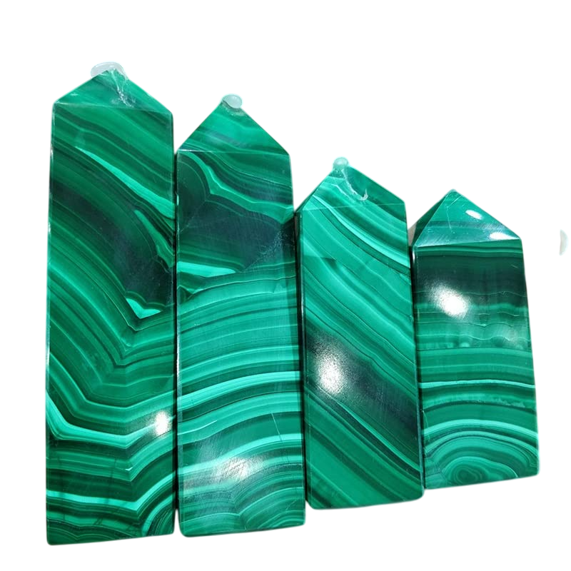
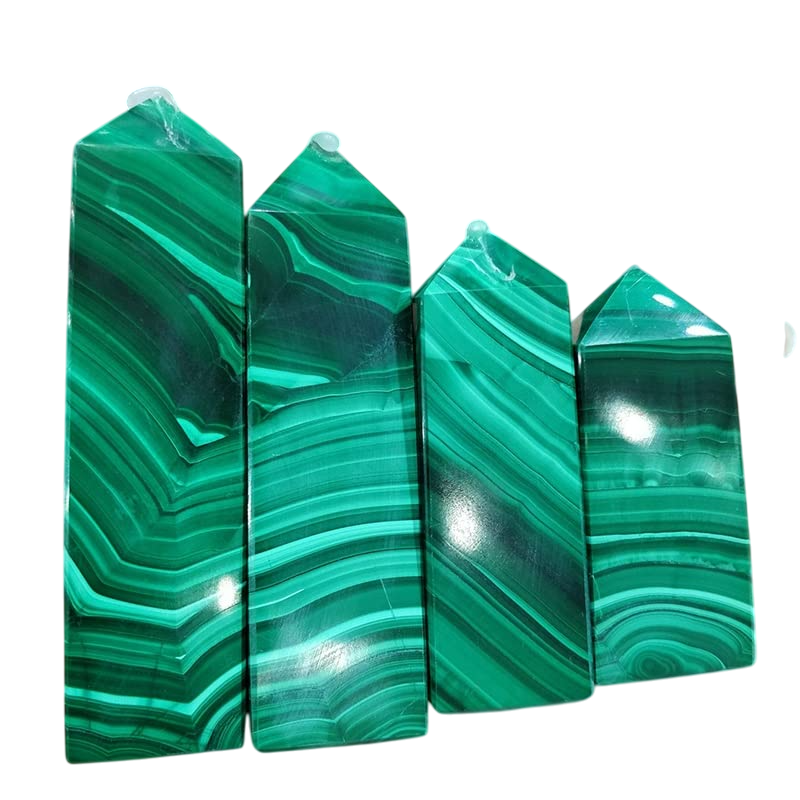
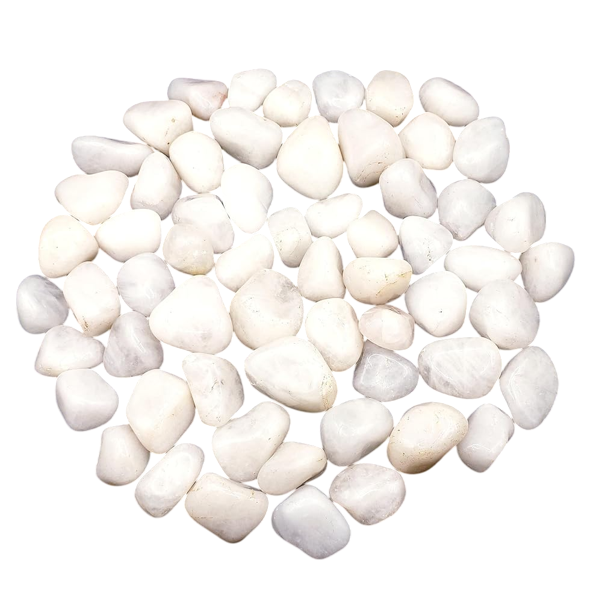
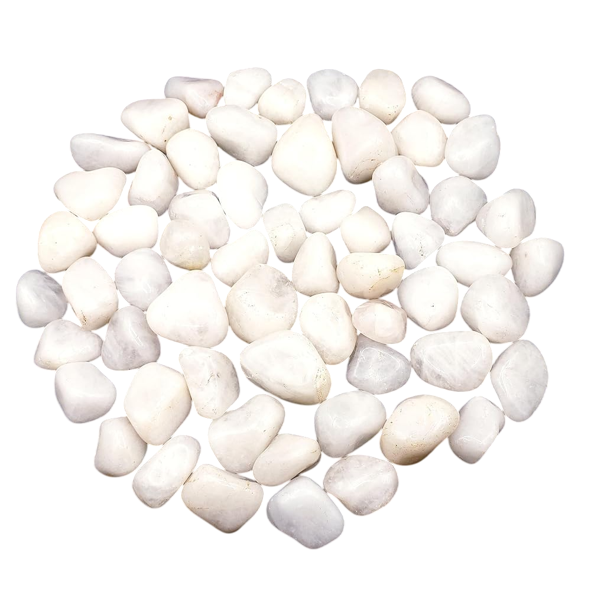
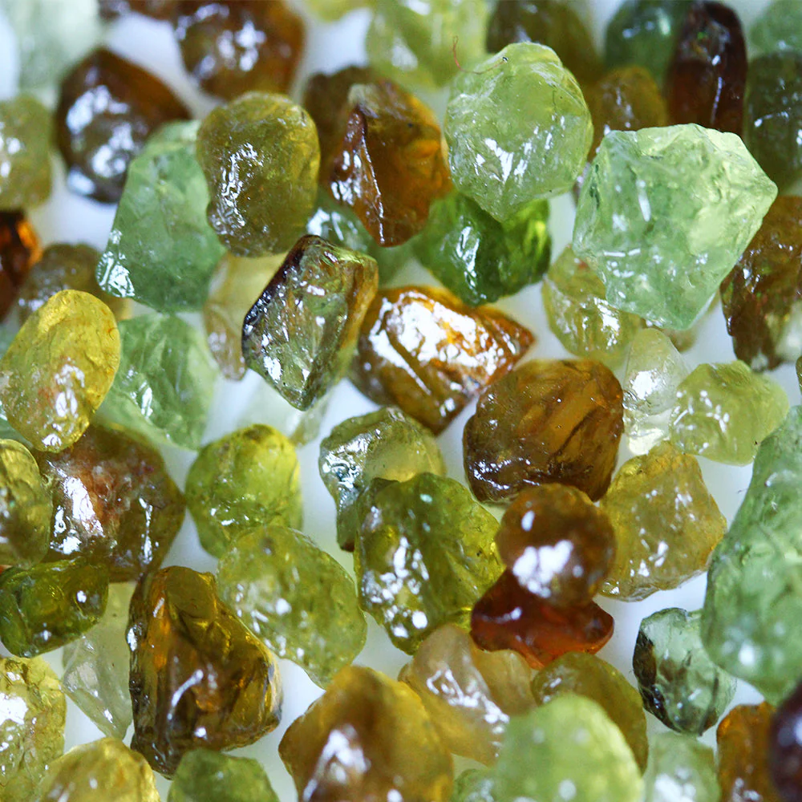
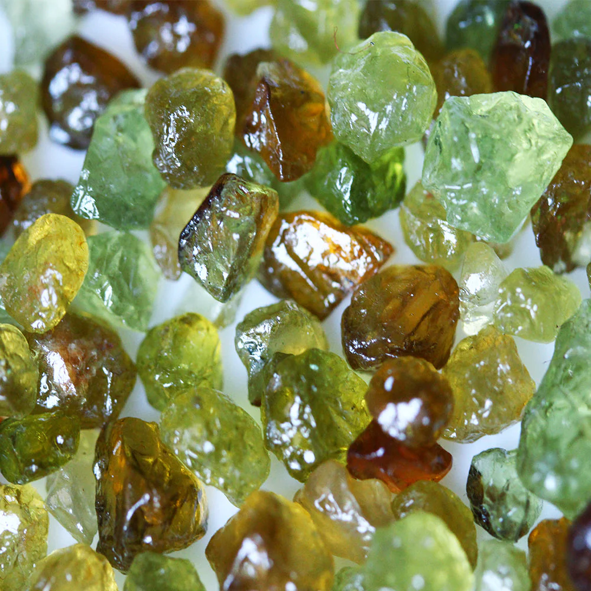
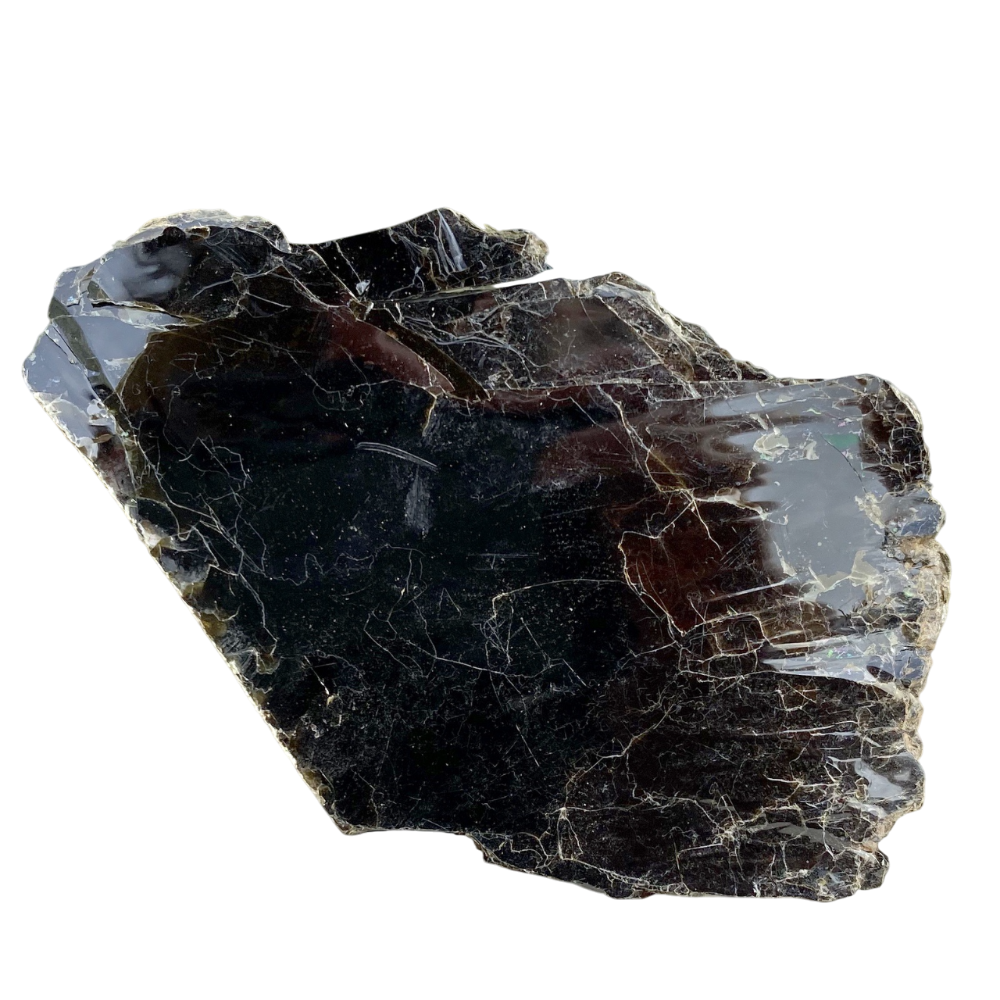
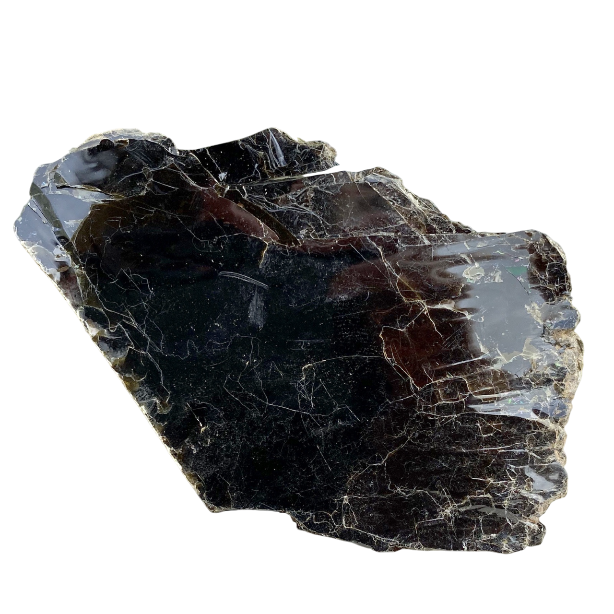

Devido à grande variedade de tipos de pedras, recomendamos utilizar os filtros abaixo para encontrar mais facilmente o que procura. Você pode organizar por nome, preço ou avaliação, e filtrar por cor ou propriedades específicas.


Produtos Religiosos / Pedras Naturais / Quartzo Rosa
Quartzo Rosa (3cm a 8cm)
Código: PED-QR-001
R$ 12,00 - R$ 45,00
O Quartzo Rosa é conhecido como a pedra do amor incondicional. Promove paz, harmonia e cura emocional, sendo ideal para trabalhar questões do coração e atrair relacionamentos saudáveis. Cada pedra é única, com variações naturais de cor e formação.
Propriedades Especiais:
- Chakra: Cardíaco (4º Chakra) - Ativa o centro de amor e compaixão
- Signos: Touro (estabilidade emocional) e Libra (harmonia nos relacionamentos)
- Elemento: Água (emoções e fluxo energético)
- Benefícios:
- Amor próprio e autoaceitação
- Cura de traumas emocionais
- Harmonia em relacionamentos
- Redução do estresse e ansiedade
- Origem: Minas Gerais, Brasil - Extraído de forma sustentável
- Dureza: 7 na escala Mohs (resistente para uso diário)
Dica Especial:
Coloque o Quartzo Rosa próximo à sua cama para promover sonhos pacíficos e harmonizar o ambiente. Limpe a pedra mensalmente com água corrente e recarregue sob a luz da Lua.


Produtos Religiosos / Pedras Naturais / Ametista
Ametista (3cm a 10cm)
Código: PED-AM-001
R$ 15,00 - R$ 60,00
A Ametista é uma poderosa pedra de proteção espiritual e purificação. Excelente para meditação, ajuda a acalmar a mente e a equilibrar as emoções, além de afastar energias negativas. Cada cristal apresenta formações únicas de pontas naturais.
Propriedades Especiais:
- Chakra: Coronário (7º Chakra) - Conexão com o divino e intuição
- Signos: Peixes (espiritualidade), Virgem (organização), Sagitário (expansão) e Aquário (inovação)
- Elemento: Ar (mente e comunicação)
- Benefícios:
- Proteção contra energias negativas
- Amplificação da intuição e sabedoria
- Equilíbrio emocional e mental
- Auxílio no combate ao vícios
- Origem: Rio Grande do Sul, Brasil - Cristais de alta qualidade
- Dureza: 7 na escala Mohs (ideal para uso contínuo)
Dica Especial:
Coloque uma Ametista em seu local de trabalho para neutralizar energias negativas e promover clareza mental. Para limpeza energética, deixe-a sob a luz do sol pela manhã ou da lua à noite.


Produtos Religiosos / Pedras Naturais / Safira Azul
Safira Azul (1cm a 3cm)
Código: PED-SA-001
R$ 50,00 - R$ 200,00
A Safira Azul é uma pedra nobre associada à verdade, justiça e sabedoria. Estimula a intuição e a conexão espiritual, além de promover clareza mental e foco. Cada exemplar possui características únicas de cor e transparência.
Propriedades Especiais:
- Chakra: Garganta (5º) - Comunicação e Terceiro Olho (6º) - Intuição
- Signos: Touro (estabilidade), Virgem (detalhismo) e Sagitário (sabedoria)
- Elemento: Ar (intelecto e comunicação)
- Benefícios:
- Promove expressão verdadeira e autêntica
- Amplifica a intuição e percepção espiritual
- Auxilia na tomada de decisões sábias
- Protege contra energias negativas
- Origem: Sri Lanka - Pedras selecionadas manualmente
- Dureza: 9 na escala Mohs (uma das pedras mais duras)
Dica Especial:
Use a Safira Azul como pingente próximo à garganta para melhorar a comunicação ou na testa para ampliar a intuição durante meditações. Limpe com água morna e sabão neutro, evitando produtos químicos.
Produtos Religiosos / Pedras Naturais / Opala Dendrítica
Opala Dendrítica (3cm a 7cm)
Código: PED-OD-001
R$ 25,00 - R$ 80,00
A Opala Dendrítica é conhecida como a pedra da conexão com a natureza. Suas formações dendríticas únicas ajudam no crescimento pessoal e espiritual, promovendo harmonia com o meio ambiente. Cada peça apresenta padrões naturais exclusivos.
Propriedades Especiais:
- Chakra: Cardíaco (4º) - Conexão emocional com a natureza
- Signos: Câncer (sensibilidade) e Touro (apego à terra)
- Elemento: Terra (enraizamento e estabilidade)
- Benefícios:
- Fortalece a conexão com o mundo natural
- Promove crescimento pessoal e espiritual
- Auxilia na compreensão dos ciclos da vida
- Estimula a paciência e aceitação
- Origem: Austrália - Formações geológicas únicas
- Dureza: 5.5-6.5 na escala Mohs (cuidado com impactos)
Dica Especial:
Leve a Opala Dendrítica consigo durante caminhadas na natureza para fortalecer sua conexão com a terra. Para limpeza, utilize um pano macio e evite água em excesso para preservar suas formações únicas.


Produtos Religiosos / Pedras Naturais / Jaspe Sanguíneo
Jaspe Sanguíneo (3cm a 6cm)
Código: PED-JS-001
R$ 18,00 - R$ 50,00
O Jaspe Sanguíneo é uma pedra de vitalidade que fortalece o sistema circulatório e aumenta a energia física. Conhecida como a "pedra do guerreiro", traz coragem e resistência. Cada exemplar apresenta padrões únicos de manchas vermelhas.
Propriedades Especiais:
- Chakra: Básico (1º) - Energia física e vitalidade
- Signos: Áries (iniciativa) e Escorpião (transformação)
- Elemento: Fogo (ação e coragem)
- Benefícios:
- Aumenta a energia e disposição física
- Fortalece o sistema circulatório
- Proporciona coragem para enfrentar desafios
- Auxilia na recuperação pós-cirúrgica
- Origem: Índia - Extraído de forma responsável
- Dureza: 6.5-7 na escala Mohs (resistente ao desgaste)
Dica Especial:
Carregue o Jaspe Sanguíneo no bolso durante atividades físicas ou momentos que exigem resistência. Para energizá-lo, exponha brevemente à luz solar direta (evitando prolongamento para não desbotar).

Produtos Religiosos / Pedras Naturais / Obsidiana Arco-íris
Obsidiana Arco-íris (3cm a 7cm)
Código: PED-OA-001
R$ 30,00 - R$ 90,00
A Obsidiana Arco-íris é uma pedra de transformação profunda. Suas camadas coloridas ajudam a ver além das ilusões e encontrar a verdade interior, promovendo autoconhecimento e crescimento espiritual. Cada peça apresenta reflexos únicos.
Propriedades Especiais:
- Chakra: Básico (1º) - Enraizamento e Coronário (7º) - Espiritualidade
- Signos: Escorpião (transformação) e Capricórnio (disciplina)
- Elemento: Terra (estabilidade) e Fogo (transformação)
- Benefícios:
- Promove transformação pessoal profunda
- Ajuda a ver além das ilusões e aparências
- Protege contra energias negativas
- Facilita o acesso ao inconsciente
- Origem: México - Formações vulcânicas únicas
- Dureza: 5-5.5 na escala Mohs (requer cuidado no manuseio)
Dica Especial:
Use a Obsidiana Arco-íris durante meditações para acessar memórias reprimidas e promover cura emocional. Para limpeza, utilize água corrente rápida e recarregue sobre uma drusa de quartzo.
Produtos Religiosos / Pedras Naturais / Fuchsita
Fuchsita (3cm a 6cm)
Código: PED-FU-001
R$ 22,00 - R$ 65,00
A Fuchsita é uma pedra da cura emocional profunda. Ajuda a liberar padrões negativos e traumas antigos, promovendo o perdão e a aceitação de si mesmo e dos outros. Seu brilho metálico único reflete luz de maneira especial.
Propriedades Especiais:
- Chakra: Cardíaco (4º) - Centro emocional e de cura
- Signos: Virgem (análise) e Peixes (compaixão)
- Elemento: Água (emoções e fluxo)
- Benefícios:
- Liberação de padrões emocionais negativos
- Cura de traumas antigos e mágoas
- Promove autoaceitação e perdão
- Auxilia no tratamento de desequilíbrios emocionais
- Origem: Brasil - Minas de alta qualidade
- Dureza: 2-3 na escala Mohs (requer cuidado especial)
Dica Especial:
Use a Fuchsita próximo ao coração em momentos de reflexão sobre relacionamentos. Por sua baixa dureza, evite impactos e limpe apenas com pano macio, sem uso de água ou produtos químicos.


Produtos Religiosos / Pedras Naturais / Quartzo Branco
Quartzo Branco (3cm a 10cm)
Código: PED-QB-001
R$ 10,00 - R$ 60,00
O Quartzo Branco é um poderoso amplificador energético. Conhecido como a "pedra mestre", pode ser programado para diversos fins e potencializa a energia de outras pedras e intenções. Sua pureza varia conforme formações naturais.
Propriedades Especiais:
- Chakra: Todos, especialmente o Coronário (7º) - Conexão espiritual
- Signos: Todos, especialmente Leão (vitalidade) e Aquário (inovação)
- Elemento: Todos (versatilidade energética)
- Benefícios:
- Amplifica energias e intenções
- Limpeza e purificação energética
- Clareza mental e foco
- Potencializa outras pedras e terapias
- Origem: Minas Gerais, Brasil - Cristais de alta pureza
- Dureza: 7 na escala Mohs (resistente e durável)
Dica Especial:
Programe seu Quartzo Branco segurando-o e mentalizando sua intenção. Use para amplificar outras pedras colocando-as sobre ele. Limpe com água salgada ou defumação e recarregue sob a luz do sol ou lua.


Produtos Religiosos / Pedras Naturais / Citrino
Citrino (2cm a 6cm)
Código: PED-CT-001
R$ 15,00 - R$ 50,00
O Citrino é conhecido como a "pedra da prosperidade". Atrai riqueza, sucesso e abundância, além de estimular a criatividade e a autoestima. Excelente para negócios e empreendedorismo. Cada pedra apresenta tons naturais que variam do amarelo claro ao dourado intenso.
Propriedades Especiais:
- Chakra: Plexo Solar (3º) - Centro de poder pessoal
- Signos: Gêmeos (comunicação), Leão (liderança) e Virgem (organização)
- Elemento: Fogo (energia e transformação)
- Benefícios:
- Atrai prosperidade e abundância
- Estimula a criatividade e novas ideias
- Aumenta a autoconfiança e autoestima
- Dissipa energias negativas
- Origem: Bahia, Brasil - Minas naturais
- Dureza: 7 na escala Mohs (resistente para uso diário)
Dica Especial:
Coloque o Citrino na carteira ou no local de trabalho para atrair prosperidade. Para energizá-lo, exponha à luz solar indireta por breves períodos (evitando desbotamento). Combine com Pirita para potencializar efeitos financeiros.


Produtos Religiosos / Pedras Naturais / Turmalina Negra
Turmalina Negra (3cm a 8cm)
Código: PED-TN-001
R$ 20,00 - R$ 70,00
A Turmalina Negra é uma das pedras de proteção mais poderosas. Absorve energias negativas, cria um escudo protetor ao redor do corpo e é essencial para trabalhos de limpeza e descarrego. Suas formações alongadas são características únicas.
Propriedades Especiais:
- Chakra: Básico (1º) - Enraizamento e proteção
- Signos: Capricórnio (disciplina) e Escorpião (transformação)
- Elemento: Terra (estabilidade e proteção)
- Benefícios:
- Proteção contra energias negativas e ataques psíquicos
- Limpeza e purificação energética de ambientes
- Ancoragem e conexão com a Terra
- Proteção contra radiação eletromagnética
- Origem: Minas Gerais, Brasil - Cristais de alta qualidade
- Dureza: 7-7.5 na escala Mohs (altamente durável)
Dica Especial:
Coloque Turmalinas Negras nos cantos de sua casa para proteção contínua. Para limpeza, deixe sob água corrente ou enterre na terra por 24 horas. Combine com Quartzo Branco para transformar energias negativas em positivas.


Produtos Religiosos / Pedras Naturais / Selenita
Selenita (10cm a 20cm)
Código: PED-SL-001
R$ 25,00 - R$ 90,00
A Selenita é uma pedra de alta vibração que limpa e energiza ambientes. Conhecida como "pedra da luz", eleva a consciência espiritual, auxilia na conexão com o divino e limpa outras pedras e cristais. Sua estrutura fibrosa é única e delicada.
Propriedades Especiais:
- Chakra: Coronário (7º) - Conexão com o divino
- Signos: Câncer (sensibilidade) e Peixes (espiritualidade)
- Elemento: Água (purificação e fluxo)
- Benefícios:
- Limpeza e purificação energética de ambientes
- Conexão com guias espirituais e anjos
- Paz interior e clareza mental
- Recarrega e limpa outras pedras e cristais
- Origem: Marrocos - Formações naturais únicas
- Dureza: 2 na escala Mohs (requer cuidados especiais)
Dica Especial:
Use a Selenita como vareta de luz em meditações ou coloque sobre outros cristais para limpá-los. Evite contato com água - limpe apenas com pano seco. Excelente para criar um "banho de luz" em ambientes.


Produtos Religiosos / Pedras Naturais / Labradorita
Labradorita (3cm a 7cm)
Código: PED-LB-001
R$ 20,00 - R$ 80,00
A Labradorita é uma pedra mágica de proteção e intuição. Conhecida como a "pedra dos magos", fortalece a aura, protege contra energias negativas e desenvolve habilidades psíquicas e mediúnicas. Seu fenômeno óptico (labradorescência) cria cores fascinantes.
Propriedades Especiais:
- Chakra: Terceiro Olho (6º) - Intuição e Garganta (5º) - Comunicação espiritual
- Signos: Sagitário (expansão), Escorpião (mistério) e Leão (vitalidade)
- Elemento: Ar (mente e comunicação)
- Benefícios:
- Proteção psíquica e fortalecimento da aura
- Desenvolvimento de habilidades intuitivas e mediúnicas
- Acesso a conhecimentos ocultos e sabedoria ancestral
- Transforma energias negativas em positivas
- Origem: Madagascar - Pedras com labradorescência intensa
- Dureza: 6-6.5 na escala Mohs (cuidado com impactos)
Dica Especial:
Use a Labradorita como pingente para proteção contínua ou durante trabalhos mediúnicos. Para ativar sua labradorescência, mova-a sob diferentes fontes de luz. Limpe com água corrente rápida e recarregue sob a luz da lua.


Produtos Religiosos / Pedras Naturais / Ágata Azul
Ágata Azul (3cm a 6cm)
Código: PED-AA-001
R$ 15,00 - R$ 45,00
A Ágata Azul é uma pedra calmante que promove paz interior e comunicação clara. Excelente para acalmar a mente, reduzir o estresse e facilitar a expressão de sentimentos e ideias. Seus padrões de bandas são únicos em cada pedra.
Propriedades Especiais:
- Chakra: Garganta (5º) - Comunicação e expressão
- Signos: Gêmeos (comunicação), Virgem (organização) e Peixes (sensibilidade)
- Elemento: Água (emoções e fluxo)
- Benefícios:
- Facilita a comunicação clara e pacífica
- Promove paz interior e equilíbrio emocional
- Reduz o estresse e a ansiedade
- Auxilia na expressão de sentimentos e verdades
- Origem: Brasil - Lapidação artesanal
- Dureza: 6.5-7 na escala Mohs (resistente para uso contínuo)
Dica Especial:
Use a Ágata Azul como pingente para melhorar a comunicação ou coloque sobre a mesa de trabalho para criar um ambiente harmonioso. Limpe com água corrente e recarregue sob a luz da lua crescente.


Produtos Religiosos / Pedras Naturais / Jaspe Vermelho
Jaspe Vermelho (3cm a 6cm)
Código: PED-JV-001
R$ 12,00 - R$ 40,00
O Jaspe Vermelho é uma pedra de vitalidade e coragem. Aumenta a energia física, fortalece a força de vontade e ajuda a superar medos e inseguranças, sendo ideal para momentos de desafio. Sua cor vibrante reflete sua energia estimulante.
Propriedades Especiais:
- Chakra: Básico (1º) - Raiz e vitalidade
- Signos: Áries (ação) e Escorpião (transformação)
- Elemento: Fogo (energia e paixão)
- Benefícios:
- Aumenta a energia física e disposição
- Fortalece a coragem e força de vontade
- Auxilia na superação de medos e desafios
- Estimula a paixão e motivação
- Origem: Brasil - Extração sustentável
- Dureza: 6.5-7 na escala Mohs (resistente para uso diário)
Dica Especial:
Carregue o Jaspe Vermelho no bolso em situações que exigem coragem ou antes de atividades físicas. Para energizá-lo, exponha ao sol da manhã. Combine com Quartzo Rosa para equilibrar paixão e amor.


Produtos Religiosos / Pedras Naturais / Hematita
Hematita (2cm a 6cm)
Código: PED-HE-001
R$ 12,00 - R$ 40,00
A Hematita é uma poderosa pedra de proteção e ancoragem. Excelente para absorver energias negativas e trazer equilíbrio emocional, além de ajudar na concentração e foco mental. Seu brilho metálico único reflete sua energia protetora.
Propriedades Especiais:
- Chakra: Básico (1º) - Enraizamento e estabilidade
- Signos: Áries (ação), Escorpião (transformação) e Capricórnio (disciplina)
- Elemento: Terra (proteção e solidez)
- Benefícios:
- Proteção contra energias negativas
- Ancoragem e conexão com a Terra
- Equilíbrio emocional e mental
- Melhora a concentração e foco
- Origem: Minas Gerais, Brasil - Minério de alta qualidade
- Dureza: 5.5-6.5 na escala Mohs (resistente para uso diário)
Dica Especial:
Use a Hematita como pingente ou carregue no bolso para proteção contínua. Excelente para quem trabalha com público ou em ambientes carregados. Limpe com água corrente e recarregue sobre drusa de quartzo.

Produtos Religiosos / Pedras Naturais / Pirita
Pirita (2cm a 5cm)
Código: PED-PI-001
R$ 18,00 - R$ 60,00
A Pirita, conhecida como "ouro dos tolos", é uma poderosa pedra de prosperidade e proteção. Atrai riqueza e abundância, além de proteger contra energias negativas e vampirismo energético. Sua formação cúbica natural é única.
Propriedades Especiais:
- Chakra: Plexo Solar (3º) - Poder pessoal e abundância
- Signos: Leão (liderança) e Áries (iniciativa)
- Elemento: Fogo (energia e transformação)
- Benefícios:
- Atrai prosperidade e oportunidades financeiras
- Proteção contra energias negativas e inveja
- Aumenta a autoconfiança e força de vontade
- Estimula a criatividade e novas ideias
- Origem: Peru - Cristais naturais de alta qualidade
- Dureza: 6-6.5 na escala Mohs (resistente para uso diário)
Dica Especial:
Coloque a Pirita na carteira ou no local de trabalho para atrair prosperidade. Combine com Citrino para potencializar seus efeitos financeiros. Evite contato com água - limpe com pano seco.


Produtos Religiosos / Pedras Naturais / Esmeralda
Esmeralda (1cm a 3cm)
Código: PED-ES-001
R$ 40,00 - R$ 150,00
A Esmeralda é uma pedra nobre associada ao amor e à sabedoria. Promove equilíbrio emocional, compaixão e harmonia nos relacionamentos, além de estimular a abundância e a prosperidade. Cada pedra possui inclusões naturais que garantem sua autenticidade.
Propriedades Especiais:
- Chakra: Cardíaco (4º) - Amor e cura emocional
- Signos: Touro (estabilidade), Câncer (emoção) e Libra (harmonia)
- Elemento: Terra (enraizamento) e Água (fluxo emocional)
- Benefícios:
- Promove amor incondicional e relacionamentos harmoniosos
- Estimula sabedoria e discernimento
- Atrai prosperidade e abundância
- Auxilia na cura emocional e equilíbrio interior
- Origem: Colômbia - Pedras de alta qualidade
- Dureza: 7.5-8 na escala Mohs (resistente para joias)
Dica Especial:
Use a Esmeralda como pingente próximo ao coração para ampliar seus efeitos. Excelente presente para aniversários de casamento. Limpe com água morna e sabão neutro, evitando produtos químicos.
Produtos Religiosos / Pedras Naturais / rodocrosita
Rodocrosita (3cm a 6cm)
Código: PED-RD-001
R$ 28,00 - R$ 75,00
A Rodocrosita é conhecida como a pedra do amor incondicional e da compaixão. Promove a cura emocional profunda, ajudando a liberar traumas do passado e a abrir o coração para novas experiências. Seus padrões rosados são únicos em cada pedra.
Propriedades Especiais:
- Chakra: Cardíaco (4º) - Centro do amor e cura emocional
- Signos: Touro (sensualidade) e Libra (relacionamentos)
- Elemento: Água (emoções e fluxo)
- Benefícios:
- Amor incondicional e autoaceitação
- Cura de traumas emocionais profundos
- Desenvolve compaixão e empatia
- Auxilia na reconciliação e perdão
- Origem: Argentina - Minas de alta qualidade
- Dureza: 3.5-4 na escala Mohs (requer cuidados especiais)
Dica Especial:
Use a Rodocrosita próximo ao coração durante meditações de cura emocional. Por sua baixa dureza, evite impactos e limpe apenas com pano macio umedecido. Combine com Quartzo Rosa para potencializar seus efeitos.

Produtos Religiosos / Pedras Naturais / Topázio Imperial
Topázio Imperial (1cm a 3cm)
Código: PED-TI-001
R$ 50,00 - R$ 200,00
O Topázio Imperial é uma pedra rara de sabedoria e prosperidade. Atrai sucesso e fortuna, enquanto estimula o intelecto e a clareza mental para tomada de decisões importantes. Sua cor dourada é exclusiva do Brasil.
Propriedades Especiais:
- Chakra: Plexo Solar (3º) - Poder pessoal e Coronário (7º) - Conexão espiritual
- Signos: Leão (vitalidade), Sagitário (expansão) e Peixes (intuição)
- Elemento: Fogo (ação) e Água (emoção)
- Benefícios:
- Atrai prosperidade e oportunidades de sucesso
- Estimula sabedoria e discernimento
- Proporciona clareza mental para decisões importantes
- Fortalece a intuição e conexão espiritual
- Origem: Minas Gerais, Brasil - Pedra exclusiva brasileira
- Dureza: 8 na escala Mohs (excelente para joias)
Dica Especial:
Use o Topázio Imperial como pingente ou anel para manter seus efeitos próximos ao corpo. Excelente para empresários e estudantes. Limpe com água morna e sabão neutro, recarregando sob a luz solar indireta.
 

Produtos Religiosos / Pedras Naturais / Malaquita
Malaquita (3cm a 6cm)
Código: PED-MQ-001
R$ 20,00 - R$ 60,00
A Malaquita é uma poderosa pedra transformadora que absorve energias negativas e poluentes. Promove mudanças positivas na vida, ajudando a romper padrões negativos e a liberar traumas emocionais. Seus padrões de anéis são únicos em cada pedra.
Propriedades Especiais:
- Chakra: Cardíaco (4º) - Cura emocional e Plexo Solar (3º) - Transformação
- Signos: Escorpião (transformação), Capricórnio (disciplina) e Touro (estabilidade)
- Elemento: Terra (enraizamento e proteção)
- Benefícios:
- Transformação positiva e quebra de padrões negativos
- Proteção contra energias negativas e poluição
- Cura emocional profunda e liberação de traumas
- Amplifica as emoções e verdades internas
- Cuidados: Evitar contato com água e produtos químicos
- Origem: Congo - Extração responsável
- Dureza: 3.5-4 na escala Mohs (requer cuidados especiais)
Dica Especial:
Use a Malaquita em períodos de transição ou mudança. Por sua toxicidade em estado bruto, evite contato direto prolongado com a pele. Limpe apenas com pano seco e recarregue sobre drusa de quartzo.

Produtos Religiosos / Pedras Naturais / Crisoprásio
Crisoprásio (3cm a 6cm)
Código: PED-CP-001
R$ 18,00 - R$ 50,00
O Crisoprásio é conhecido como a pedra da esperança e da alegria. Ajuda a superar momentos difíceis, trazendo otimismo e atraindo novas oportunidades e amizades. Seu verde suave transmite paz e renovação.
Propriedades Especiais:
- Chakra: Cardíaco (4º) - Centro emocional e de cura
- Signos: Virgem (organização) e Libra (harmonia)
- Elemento: Terra (estabilidade e crescimento)
- Benefícios:
- Renova a esperança em momentos difíceis
- Atrai alegria e novas oportunidades
- Promove reconciliação e novos começos
- Auxilia na formação de novas amizades
- Origem: Austrália - Pedras de alta qualidade
- Dureza: 6.5-7 na escala Mohs (resistente para uso diário)
Dica Especial:
Use o Crisoprásio em momentos de transição ou quando precisar de esperança renovada. Excelente para presentear alguém que está passando por dificuldades. Limpe com água corrente e recarregue sob a luz solar indireta.


Produtos Religiosos / Pedras Naturais / Âmbar
Âmbar (2cm a 5cm)
Código: PED-AM-002
R$ 30,00 - R$ 90,00
O Âmbar é uma resina fossilizada com poderosas propriedades de cura e proteção. Absorve energias negativas, alivia o estresse e promove vitalidade, sendo especialmente benéfico para crianças. Cada peça contém histórias de milhões de anos.
Propriedades Especiais:
- Chakra: Plexo Solar (3º) - Centro de energia e vitalidade
- Signos: Leão (vitalidade), Virgem (cura) e Gêmeos (comunicação)
- Elemento: Fogo (energia e transformação)
- Benefícios:
- Proteção contra energias negativas e doenças
- Promove vitalidade e disposição
- Alivia o estresse e ansiedade
- Excelente para crianças e bebês
- Origem: República Dominicana - Âmbar com maior transparência
- Dureza: 2-2.5 na escala Mohs (requer cuidados especiais)
Dica Especial:
O Âmbar é tradicionalmente usado como colar para bebês para alívio do desconforto da dentição. Para limpeza, use apenas pano macio e água morna. Evite produtos químicos e calor excessivo que podem danificar a resina.


Produtos Religiosos / Pedras Naturais / Calcita Laranja
Calcita Laranja (3cm a 6cm)
Código: PED-CL-001
R$ 15,00 - R$ 45,00
A Calcita Laranja é uma pedra energizante que estimula a criatividade e a alegria de viver. Excelente para superar traumas emocionais e liberar bloqueios do passado. Sua cor vibrante reflete sua energia estimulante.
Propriedades Especiais:
- Chakra: Sacro (2º) - Centro de criatividade e prazer
- Signos: Áries (ação), Leão (vitalidade) e Sagitário (otimismo)
- Elemento: Fogo (energia e paixão)
- Benefícios:
- Estimula a criatividade e novas ideias
- Promove alegria e entusiasmo pela vida
- Ajuda a superar traumas e bloqueios emocionais
- Energiza e revitaliza o corpo físico
- Origem: México - Cristais de alta qualidade
- Dureza: 3 na escala Mohs (requer cuidados especiais)
Dica Especial:
Use a Calcita Laranja em ambientes criativos ou durante meditações para desbloqueio. Por sua baixa dureza, evite impactos e limpe apenas com pano seco. Recarregue sob a luz solar indireta por breves períodos.


Produtos Religiosos / Pedras Naturais / Quartzo Verde
Quartzo Verde (3cm a 6cm)
Código: PED-QV-001
R$ 18,00 - R$ 50,00
O Quartzo Verde é uma poderosa pedra de cura, tanto física quanto emocional. Promove regeneração, crescimento pessoal e conexão com a natureza. Sua cor verde varia conforme sua formação natural.
Propriedades Especiais:
- Chakra: Cardíaco (4º) - Centro de cura e amor
- Signos: Touro (natureza), Virgem (cura) e Capricórnio (crescimento)
- Elemento: Terra (enraizamento e nutrição)
- Benefícios:
- Acelera processos de cura física e emocional
- Promove regeneração e renovação
- Estimula crescimento pessoal e espiritual
- Fortalecer conexão com a natureza
- Origem: Brasil - Cristais de alta qualidade
- Dureza: 7 na escala Mohs (resistente para uso diário)
Dica Especial:
Use o Quartzo Verde em terapias de cura ou coloque sobre áreas do corpo que necessitem de regeneração. Excelente para jardineiros e terapeutas. Limpe com água corrente e recarregue sob a luz da lua.


Produtos Religiosos / Pedras Naturais / Sodalita
Sodalita (3cm a 6cm)
Código: PED-SO-001
R$ 15,00 - R$ 40,00
A Sodalita é uma pedra da verdade e da comunicação. Ajuda a expressar pensamentos com clareza, promove a objetividade e fortalece o raciocínio lógico. Seu azul profundo com veios brancos é único.
Propriedades Especiais:
- Chakra: Garganta (5º) - Comunicação e Terceiro Olho (6º) - Intuição
- Signos: Sagitário (sabedoria) e Aquário (inovação)
- Elemento: Ar (mente e comunicação)
- Benefícios:
- Facilita a comunicação clara e objetiva
- Promove a expressão da verdade interior
- Fortalecer o raciocínio lógico e análise
- Estimula a intuição e percepção
- Origem: Brasil - Pedras selecionadas
- Dureza: 5.5-6 na escala Mohs (cuidado com impactos)
Dica Especial:
Use a Sodalita como pingente ou coloque no local de trabalho para melhorar a comunicação. Excelente para professores, escritores e oradores. Limpe com água corrente e recarregue sob a luz da lua.


Produtos Religiosos / Pedras Naturais / Olho de Tigre
Olho de Tigre (3cm a 8cm)
Código: PED-OT-001
R$ 18,00 - R$ 65,00
O Olho de Tigre é uma poderosa pedra de proteção que forma um escudo energético contra negatividades. Seu efeito chatoyant (reflexo em faixas) é hipnotizante e varia do dourado ao marrom-escuro.
Propriedades Especiais:
- Chakra: Plexo Solar (3º) - Poder pessoal e Raiz (1º) - Segurança
- Signos: Gêmeos (comunicação), Leão (liderança) e Capricórnio (determinação)
- Elemento: Terra (estabilidade) e Fogo (vitalidade)
- Benefícios:
- Proteção contra inveja e energias negativas
- Aumenta a coragem e autoconfiança
- Melhora o discernimento e tomada de decisões
- Equilibra emoções extremas
- Origem: África do Sul - Minas certificadas
- Dureza: 7 na escala Mohs - Resistente para uso diário
Dica Especial:
Leve no bolso como amuleto protetor ou use como pingente para fortalecer a autoconfiança. Excelente para profissionais que lidam com críticas. Limpe com água salgada e recarregue ao sol da manhã.


Produtos Religiosos / Pedras Naturais / Apatita Azul
Apatita Azul (2cm a 5cm)
Código: PED-APA-001
R$ 25,00 - R$ 60,00
A Apatita Azul é um cristal raro que dissolve bloqueios na comunicação. Seu azul translúcido lembra águas tropicais e estimula a expressão criativa e a clareza verbal.
Propriedades Especiais:
- Chakra: Garganta (5º) - Expressão e Terceiro Olho (6º) - Intuição
- Signos: Gêmeos (comunicação) e Sagitário (expansão)
- Elemento: Ar (mente) e Água (emoções)
- Benefícios:
- Supera a timidez e inibição
- Facilita falar em público
- Estimula novas ideias e insights
- Melhora a escuta ativa
- Origem: Minas Gerais - Brasil
- Dureza: 5 na escala Mohs - Requer cuidado especial
Dica Especial:
Use como pingente durante reuniões importantes ou coloque sobre a mesa de trabalho. Ideal para escritores e artistas. Limpe com água corrente e recarregue em geodo de quartzo.

Produtos Religiosos / Pedras Naturais / Turmalina Rosa
Turmalina Rosa (2cm a 6cm)
Código: PED-TR-002
R$ 30,00 - R$ 75,00
A Turmalina Rosa é a pedra do amor incondicional. Seu rosa vibrante varia de tons suaves a intensos e atua como um bálsamo para corações feridos, promovendo autoaceitação.
Propriedades Especiais:
- Chakra: Cardíaco (4º) - Amor e Sacro (2º) - Prazer
- Signos: Libra (relacionamentos) e Touro (sensualidade)
- Elemento: Água (emoções) e Terra (estabilidade)
- Benefícios:
- Cura mágoas e rejeições antigas
- Atrai relacionamentos saudáveis
- Desenvolve a autoestima
- Promove reconciliações
- Origem: Minas Gerais - Brasil
- Dureza: 7-7.5 na escala Mohs - Boa durabilidade
Dica Especial:
Use próximo ao coração como pingente ou coloque sob o travesseiro para sonhos amorosos. Excelente para terapeutas. Limpe com água corrente e recarregue entre outras turmalinas.
Produtos Religiosos / Pedras Naturais / Lápis Lázuli
Lápis Lázuli (2cm a 7cm)
Código: PED-LL-001
R$ 45,00 - R$ 120,00
O Lápis Lázuli, usado por faraós e alquimistas, é um portal para a sabedoria superior. Seu azul profundo com pirita dourada estimula a conexão com guias espirituais e a expressão da verdade interior.
Propriedades Especiais:
- Chakra: Terceiro Olho (6º) - Intuição e Garganta (5º) - Verdade
- Signos: Sagitário (filosofia), Aquário (inovação) e Peixes (espiritualidade)
- Elemento: Ar (mente) e Éter (espiritual)
- Benefícios:
- Amplia a percepção espiritual
- Facilita a comunicação com guias
- Desenvolve a intuição prática
- Protege contra manipulações
- Origem: Afeganistão - Mina histórica de Sar-e-Sang
- Dureza: 5-5.5 na escala Mohs - Cuidado com impactos
Dica Especial:
Use durante meditações ou coloque sobre o terceiro olho para desenvolver clarividência. Ideal para terapeutas holísticos. Limpe com incenso e recarregue sob a luz das estrelas.

Produtos Religiosos / Pedras Naturais / Coríndon
Coríndon (3cm a 6cm)
Código: PED-CO-001
R$ 25,00 - R$ 70,00
O Coríndon é um poderoso cristal de ação e vitalidade. Sua energia terrosa estimula a iniciativa e a persistência, ajudando a superar medos e inércia para conquistar objetivos.
Propriedades Especiais:
- Chakra: Raiz (1º) - Segurança e Plexo Solar (3º) - Poder pessoal
- Signos: Áries (iniciativa), Leão (liderança) e Escorpião (transformação)
- Elemento: Fogo (ação) e Terra (manifestação)
- Benefícios:
- Fortalece a determinação
- Protege contra energias de desânimo
- Aumenta a resistência física
- Estimula a tomada de decisões
- Origem: Índia - Minas tradicionais
- Dureza: 9 na escala Mohs - Extremamente resistente
Dica Especial:
Leve no bolso em situações desafiadoras ou use como pingente para fortalecer a autoconfiança. Excelente para atletas e empreendedores. Limpe com água salgada e recarregue ao sol.

Produtos Religiosos / Pedras Naturais / Prehnita
Prehnita (3cm a 7cm)
Código: PED-PR-001
R$ 28,00 - R$ 80,00
A Prehnita é um portal para o mundo onírico. Seu verde translúcido com brilho sedoso facilita a recordação de sonhos e a conexão com mensagens do inconsciente e guias espirituais.
Propriedades Especiais:
- Chakra: Cardíaco (4º) - Cura emocional e Terceiro Olho (6º) - Intuição
- Signos: Câncer (sensibilidade) e Libra (equilíbrio)
- Elemento: Água (emoções) e Ar (mente)
- Benefícios:
- Facilita sonhos lúcidos
- Ajuda na interpretação simbólica
- Promove cura emocional durante o sono
- Conecta com sabedoria interior
- Origem: África do Sul - Minas profundas
- Dureza: 6-6.5 na escala Mohs - Cuidado moderado
Dica Especial:
Coloque sob o travesseiro ou na mesa de cabeceira antes de dormir. Mantenha um diário de sonhos próximo. Excelente para psicólogos. Limpe com água corrente e recarregue à luz da lua crescente.


Produtos Religiosos / Pedras Naturais / Turquesa
Turquesa (2cm a 6cm)
Código: PED-TU-001
R$ 35,00 - R$ 90,00
A Turquesa é um amuleto ancestral de proteção. Seu azul celeste com veios terrosos forma um escudo energético que afasta acidentes e atrai boa sorte em viagens e novos projetos.
Propriedades Especiais:
- Chakra: Garganta (5º) - Comunicação e Cardíaco (4º) - Cura
- Signos: Sagitário (aventura), Peixes (intuição) e Aquário (inovação)
- Elemento: Terra (estabilidade) e Água (fluxo)
- Benefícios:
- Proteção física e espiritual
- Atrai oportunidades favoráveis
- Facilita a comunicação assertiva
- Equilibra emoções em mudanças
- Origem: Arizona - EUA (minas tradicionais)
- Dureza: 5-6 na escala Mohs - Evitar impactos
Dica Especial:
Use como pingente durante viagens ou coloque no carro como proteção. Excelente para pilotos e viajantes. Limpe com água corrente e recarregue sob o sol suave da manhã.

Produtos Religiosos / Pedras Naturais / Ametista Verde
Ametista Verde (2cm a 5cm)
Código: PED-AV-001
R$ 40,00 - R$ 85,00
A Ametista Verde é uma rara fusão de propriedades curativas. Seu verde suave com tons violeta promove regeneração celular e equilíbrio emocional, atuando em níveis físico e espiritual.
Propriedades Especiais:
- Chakra: Cardíaco (4º) - Cura e Plexo Solar (3º) - Vitalidade
- Signos: Peixes (sensibilidade), Virgem (cura) e Touro (estabilidade)
- Elemento: Terra (corpo) e Água (emoções)
- Benefícios:
- Acelera processos de cura
- Equilibra sistema imunológico
- Promove aceitação emocional
- Facilita transições de vida
- Origem: Minas Gerais - Brasil (jazidas raras)
- Dureza: 7 na escala Mohs - Boa durabilidade
Dica Especial:
Coloque sobre áreas do corpo que necessitem de cura ou use como pingente próximo ao coração. Ideal para profissionais de saúde. Limpe com água corrente e recarregue em geodo de quartzo.


Produtos Religiosos / Pedras Naturais / Opala Verde
Opala Verde (2cm a 5cm)
Código: PED-OV-001
R$ 32,00 - R$ 75,00
A Opala Verde é um catalisador de mudanças. Seu jogo de cores verde-dourado estimula a liberação de padrões ultrapassados e a aceitação de novas fases da vida com sabedoria e flexibilidade.
Propriedades Especiais:
- Chakra: Cardíaco (4º) - Aceitação e Plexo Solar (3º) - Transformação
- Signos: Câncer (emoções) e Libra (equilíbrio)
- Elemento: Terra (manifestação) e Água (fluidez)
- Benefícios:
- Facilita transições profissionais
- Ajuda a superar medo de mudanças
- Estimula crescimento pessoal
- Promove adaptabilidade
- Origem: Austrália - Minas de Lightning Ridge
- Dureza: 5.5-6.5 na escala Mohs - Cuidado moderado
Dica Especial:
Use durante processos de mudança ou coloque no ambiente de trabalho para estimular novas ideias. Excelente para profissionais em transição de carreira. Limpe com água destilada e recarregue ao ar livre.


Produtos Religiosos / Pedras Naturais / Peridoto
Peridoto (3cm a 6cm)
Código: PED-PE-001
R$ 35,00 - R$ 95,00
O Peridoto é um ímã de abundância. Seu verde-oliva vibrante atrai oportunidades financeiras e protege contra perdas, enquanto ajuda a liberar padrões de escassez e autossabotagem.
Propriedades Especiais:
- Chakra: Plexo Solar (3º) - Poder pessoal e Cardíaco (4º) - Dar/receber
- Signos: Leão (generosidade), Virgem (organização) e Libra (equilíbrio)
- Elemento: Fogo (ação) e Terra (manifestação)
- Benefícios:
- Atrai novas fontes de renda
- Protege contra fraudes financeiras
- Estimula generosidade equilibrada
- Ajuda a superar vícios
- Origem: Paquistão - Minas de Kohistan
- Dureza: 6.5-7 na escala Mohs - Resistente
Dica Especial:
Coloque na carteira ou no local de trabalho para atrair prosperidade. Excelente para empreendedores. Limpe com água salgada e recarregue sob a luz do sol (evitar exposição prolongada).


Produtos Religiosos / Pedras Naturais / Crisocola
Crisocola (3cm a 6cm)
Código: PED-CC-001
R$ 28,00 - R$ 70,00
A Crisocola é um bálsamo para a alma. Seus padrões azuis e verdes acalmam a mente hiperativa e facilitam a expressão de sentimentos complexos com clareza e compaixão.
Propriedades Especiais:
- Chakra: Garganta (5º) - Expressão e Cardíaco (4º) - Compaixão
- Signos: Gêmeos (comunicação), Virgem (análise) e Touro (sensibilidade)
- Elemento: Água (emoções) e Terra (grounding)
- Benefícios:
- Acalma discussões acaloradas
- Facilita diálogos difíceis
- Reduz ansiedade social
- Promove escuta empática
- Origem: Chile - Minas dos Andes
- Dureza: 2.5-3.5 na escala Mohs - Muito frágil
Dica Especial:
Use como pingente durante conversas importantes ou coloque no ambiente de trabalho para harmonizar relações. Ideal para mediadores. Limpe com água destilada e recarregue sobre drusa de quartzo.

Produtos Religiosos / Pedras Naturais / Turmalina Azul
Turmalina Azul (2cm a 5cm)
Código: PED-TA-001
R$ 42,00 - R$ 110,00
A Turmalina Azul é um canal para mensagens espirituais. Seu azul índigo profundo acalma a mente consciente, permitindo que insights do subconsciente e orientação espiritual surjam com clareza.
Propriedades Especiais:
- Chakra: Terceiro Olho (6º) - Intuição e Garganta (5º) - Verdade interior
- Signos: Aquário (inovação), Peixes (psíquico) e Sagitário (sabedoria)
- Elemento: Água (subconsciente) e Éter (espiritual)
- Benefícios:
- Facilita comunicação com guias
- Aumenta a percepção extrasensorial
- Acalma mente hiperativa
- Traduz intuições em palavras
- Origem: Minas Gerais - Brasil (jazidas raras)
- Dureza: 7-7.5 na escala Mohs - Boa durabilidade
Dica Especial:
Use durante meditações ou coloque sob o travesseiro para receber mensagens dos sonhos. Ideal para terapeutas e conselheiros. Limpe com água corrente e recarregue sob a luz das estrelas.
Produtos Religiosos / Pedras Naturais / Iolita
Iolita (2cm a 5cm)
Código: PED-IO-001
R$ 35,00 - R$ 85,00
A Iolita é uma janela para o invisível. Seu marcante pleocroísmo (mudança de cor conforme o ângulo) simboliza a capacidade de ver além das aparências e acessar verdades mais profundas.
Propriedades Especiais:
- Chakra: Terceiro Olho (6º) - Percepção e Coronário (7º) - Conexão espiritual
- Signos: Sagitário (busca) e Aquário (inovação)
- Elemento: Ar (mente) e Éter (consciência)
- Benefícios:
- Amplia a visão interior
- Desenvolve clarividência
- Ajuda a reconhecer padrões ocultos
- Facilita acesso a vidas passadas
- Origem: Índia - Minas tradicionais
- Dureza: 7-7.5 na escala Mohs - Resistente
Dica Especial:
Use como pingente próximo ao terceiro olho durante práticas intuitivas. Excelente para videntes e tarólogos. Limpe com água corrente e recarregue sob a luz da lua cheia.

Produtos Religiosos / Pedras Naturais / Ágata Roxa
Ágata Roxa (3cm a 7cm)
Código: PED-AR-001
R$ 20,00 - R$ 60,00
A Ágata Roxa é um portal para a sabedoria superior. Seus tons lilás e faixas concêntricas acalmam a mente racional e abrem caminho para insights espirituais e compreensão de padrões cósmicos.
Propriedades Especiais:
- Chakra: Coronário (7º) - Espiritualidade e Terceiro Olho (6º) - Intuição
- Signos: Sagitário (filosofia), Peixes (psíquico) e Aquário (inovação)
- Elemento: Éter (consciência) e Água (emoções)
- Benefícios:
- Profundiza práticas meditativas
- Facilita conexão com guias
- Equilibra extremos emocionais
- Promove compreensão superior
- Origem: Brasil - Minas selecionadas
- Dureza: 6.5-7 na escala Mohs - Resistente
Dica Especial:
Use durante meditações ou coloque no altar para amplificar práticas espirituais. Ideal para monges e buscadores. Limpe com água corrente e recarregue sob a luz da lua cheia.
Produtos Religiosos / Pedras Naturais / Ágata Preta
Ágata Preta (3cm a 7cm)
Código: PED-AP-001
R$ 22,00 - R$ 65,00
A Ágata Preta é um escudo energético natural. Seu preto profundo com faixas concêntricas absorve e transforma energias negativas, criando uma barreira protetora ao redor do usuário.
Propriedades Especiais:
- Chakra: Raiz (1º) - Segurança e Plexo Solar (3º) - Força pessoal
- Signos: Escorpião (transformação), Capricórnio (disciplina) e Aquário (proteção)
- Elemento: Terra (estabilidade) e Fogo (proteção ativa)
- Benefícios:
- Absorve energias negativas do ambiente
- Protege contra ataques psíquicos
- Fortalece a autoconfiança
- Estabiliza emoções em crises
- Origem: Índia - Minas tradicionais
- Dureza: 6.5-7 na escala Mohs - Resistente
Dica Especial:
Use como pingente ou carregue no bolso em locais com energias pesadas. Excelente para profissionais de saúde e segurança. Limpe com água salgada e recarregue sob a luz das estrelas.


Produtos Religiosos / Pedras Naturais / Ágata Laranja
Ágata Laranja (3cm a 6cm)
Código: PED-AL-001
R$ 20,00 - R$ 55,00
A Ágata Laranja é um raio de sol cristalizado. Seus tons que variam do laranja-pálido ao avermelhado estimulam a paixão por novos projetos e a coragem para mudanças transformadoras.
Propriedades Especiais:
- Chakra: Sacro (2º) - Criatividade e Plexo Solar (3º) - Ação
- Signos: Áries (iniciativa), Leão (expressão) e Sagitário (expansão)
- Elemento: Fogo (ação) e Terra (manifestação)
- Benefícios:
- Supera a procrastinação
- Estimula ideias inovadoras
- Aumenta a resistência física
- Fortalece a autoconfiança
- Origem: Brasil - Minas de Rio Grande do Sul
- Dureza: 6.5-7 na escala Mohs - Resistente
Dica Especial:
Coloque no local de trabalho para estimular a produtividade ou use como pingente em apresentações importantes. Ideal para artistas e empreendedores. Limpe com água corrente e recarregue ao sol da manhã.


Produtos Religiosos / Pedras Naturais / Quartzo Azul
Quartzo Azul (2cm a 5cm)
Código: PED-QA-001
R$ 25,00 - R$ 70,00
O Quartzo Azul é um canal de expressão límpida. Seu azul translúcido facilita a comunicação de verdades difíceis com compaixão e clareza, dissolvendo bloqueios de expressão.
Propriedades Especiais:
- Chakra: Garganta (5º) - Comunicação e Cardíaco (4º) - Compaixão
- Signos: Gêmeos (comunicação), Libra (diplomacia) e Aquário (inovação)
- Elemento: Ar (mente) e Água (emoções)
- Benefícios:
- Supera o medo de falar em público
- Facilita conversas difíceis
- Promove a escuta ativa
- Estimula a expressão artística
- Origem: Minas Gerais - Brasil
- Dureza: 7 na escala Mohs - Resistente
Dica Especial:
Use como pingente durante reuniões ou coloque sobre a mesa de trabalho para melhorar a comunicação. Excelente para professores e terapeutas. Limpe com água destilada e recarregue ao luar.

Produtos Religiosos / Pedras Naturais / Jaspe Tigre
Jaspe Tigre (3cm a 6cm)
Código: PED-JT-001
R$ 20,00 - R$ 60,00
O Jaspe Tigre é a essência da força primal. Seus padrões que lembram chamas e peles de animais selvagens ativam o instinto de sobrevivência e a coragem para enfrentar desafios.
Propriedades Especiais:
- Chakra: Plexo Solar (3º) - Poder pessoal e Raiz (1º) - Sobrevivência
- Signos: Áries (coragem), Leão (liderança) e Sagitário (aventura)
- Elemento: Fogo (ação) e Terra (persistência)
- Benefícios:
- Supera medos e fobias
- Fortalece a determinação
- Estimula a ação decisiva
- Aumenta a resistência física
- Origem: África do Sul - Minas profundas
- Dureza: 6.5-7 na escala Mohs - Resistente
Dica Especial:
Leve no bolso em situações desafiadoras ou use como pingente para entrevistas importantes. Ideal para atletas e profissionais competitivos. Limpe com água salgada e recarregue ao sol.

Produtos Religiosos / Pedras Naturais / Jadeíta
Jadeíta (2cm a 5cm)
Código: PED-JD-001
R$ 55,00 - R$ 150,00
A Jadeíta é o símbolo máximo da prosperidade oriental. Seu verde vibrante e translúcido atrai abundância em todas as áreas da vida, desde riqueza material até relacionamentos harmoniosos.
Propriedades Especiais:
- Chakra: Cardíaco (4º) - Amor e Plexo Solar (3º) - Prosperidade
- Signos: Touro (valores), Libra (harmonia) e Aquário (inovação)
- Elemento: Terra (manifestação) e Água (fluxo)
- Benefícios:
- Atrai oportunidades de negócios
- Protege contra perdas financeiras
- Promove relacionamentos equilibrados
- Fortalece a sabedoria prática
- Origem: Myanmar - Minas imperiais
- Dureza: 6.5-7 na escala Mohs - Resistente
Dica Especial:
Coloque na carteira ou no local de trabalho para atrair prosperidade. Presenteie empresários no ano novo chinês. Limpe com água corrente e recarregue sob a luz da lua crescente.


Produtos Religiosos / Pedras Naturais / Jaspe Amarelo
Jaspe Amarelo (3cm a 6cm)
Código: PED-JA-001
R$ 18,00 - R$ 50,00
O Jaspe Amarelo é um raio de sol petrificado. Seus tons que variam do amarelo-claro ao ocre estimulam o centro de alegria no cérebro, dissipando nuvens emocionais e trazendo leveza.
Propriedades Especiais:
- Chakra: Plexo Solar (3º) - Autoestima e Sacro (2º) - Prazer
- Signos: Leão (alegria), Virgem (serviço) e Gêmeos (comunicação)
- Elemento: Fogo (vitalidade) e Ar (mente)
- Benefícios:
- Combate a depressão sazonal
- Estimula o bom humor
- Aumenta a criatividade lúdica
- Promove pensamento positivo
- Origem: Brasil - Minas selecionadas
- Dureza: 6.5-7 na escala Mohs - Resistente
Dica Especial:
Use como pingente em dias nublados ou coloque no ambiente de trabalho para estimular a criatividade. Ideal para artistas e educadores. Limpe com água corrente e recarregue ao sol.
Produtos Religiosos / Pedras Naturais / Aventurina
Aventurina (3cm a 6cm)
Código: PED-AV-002
R$ 18,00 - R$ 45,00
A Aventurina é conhecida como a pedra da sorte e da oportunidade. Seu verde brilhante com reflexos dourados atrai prosperidade e novas chances, ajudando a reconhecer e aproveitar as oportunidades que surgem no caminho.
Propriedades Especiais:
- Chakra: Cardíaco (4º) - Amor e Plexo Solar (3º) - Prosperidade
- Signos: Touro (estabilidade), Virgem (organização) e Capricórnio (ambição)
- Elemento: Terra (concretização)
- Benefícios:
- Atrai prosperidade e abundância
- Aumenta a sorte em negócios
- Promove otimismo e confiança
- Ajuda a superar medos e inseguranças
- Origem: Índia - Minas tradicionais
- Dureza: 7 na escala Mohs (resistente)
Dica Especial:
Mantenha uma Aventurina na carteira ou local de trabalho para atrair prosperidade. Excelente para empreendedores e quem busca novas oportunidades. Limpe com água salgada e recarregue sob a luz do sol.

Produtos Religiosos / Pedras Naturais / Aragonita
Aragonita (3cm a 7cm)
Código: PED-AG-001
R$ 22,00 - R$ 65,00
A Aragonita é a pedra da paciência e da sabedoria prática. Suas formações cristalinas em camadas simbolizam o crescimento gradual e a importância de cada etapa do processo, ajudando a lidar com situações desafiadoras com calma.
Propriedades Especiais:
- Chakra: Básico (1º) - Estabilidade e Plexo Solar (3º) - Confiança
- Signos: Capricórnio (persistência), Virgem (detalhes) e Touro (paciência)
- Elemento: Terra (concretização)
- Benefícios:
- Desenvolve paciência e perseverança
- Aumenta a capacidade de concentração
- Ajuda a lidar com mudanças graduais
- Trazer estabilidade emocional em situações de estresse
- Origem: Espanha - Formações naturais
- Dureza: 3.5-4 na escala Mohs (frágil - requer cuidado)
Dica Especial:
Use a Aragonita durante meditações ou quando precisar tomar decisões importantes. Excelente para estudantes e profissionais em fase de aprendizado. Limpe com pano seco e recarregue sobre drusa de quartzo.


Produtos Religiosos / Pedras Naturais / Cristal de Quartzo
Cristal de Quartzo (3cm a 8cm)
Código: PED-CR-002
R$ 15,00 - R$ 80,00
O Cristal de Quartzo é o mais versátil e poderoso amplificador energético. Conhecido como a "pedra mestre", pode ser programado para diversos fins, potencializa a energia de outras pedras e limpa ambientes de energias negativas.
Propriedades Especiais:
- Chakra: Todos, especialmente Coronário (7º) - Conexão espiritual
- Signos: Todos, especialmente Aquário (inovação) e Leão (vitalidade)
- Elemento: Todos (mais associado ao Ar - mente)
- Benefícios:
- Amplifica energias e intenções
- Pode ser programado para diversos fins
- Potencializa o efeito de outras pedras
- Limpa e energiza ambientes
- Origem: Brasil - Minas de alta qualidade
- Dureza: 7 na escala Mohs (resistente)
Dica Especial:
Programe seu cristal segurando-o e projetando sua intenção. Use em grids de cura ou coloque em cantos da casa para proteção. Limpe com água corrente ou sal grosso e recarregue sob a luz do sol ou lua cheia.

Produtos Religiosos / Pedras Naturais / Amazonita
Amazonita (3cm a 6cm)
Código: PED-AMZ-001
R$ 20,00 - R$ 50,00
A Amazonita é a pedra da comunicação autêntica e do equilíbrio emocional. Seu verde-azulado acalma a mente e o coração, ajudando a expressar sentimentos com honestidade e clareza, sem medo ou ansiedade.
Propriedades Especiais:
- Chakra: Garganta (5º) - Comunicação e Cardíaco (4º) - Amor
- Signos: Virgem (praticidade), Peixes (sensibilidade) e Aquário (comunicação)
- Elemento: Água (emoção) e Ar (comunicação)
- Benefícios:
- Ajuda a expressar verdades difíceis
- Promove comunicação clara e compassiva
- Equilibra emoções e racionalidade
- Protege contra energias eletromagnéticas
- Origem: Brasil - Minas selecionadas
- Dureza: 6-6.5 na escala Mohs (resistente)
Dica Especial:
Use a Amazonita como pingente ou coloque no local de trabalho para melhorar a comunicação. Excelente para terapeutas, professores e profissionais de RH. Limpe com água corrente e recarregue sob a luz da lua.
Produtos Religiosos / Pedras Naturais / Ágata Musgo
Ágata Musgo (3cm a 7cm)
Código: PED-AMG-001
R$ 18,00 - R$ 55,00
A Ágata Musgo é a pedra da conexão com a natureza e do crescimento pessoal. Suas inclusões que lembram musgos e plantas promovem harmonia com o meio ambiente e estimulam novos começos com sabedoria e paciência.
Propriedades Especiais:
- Chakra: Cardíaco (4º) - Amor e Básico (1º) - Conexão com a Terra
- Signos: Touro (natureza), Virgem (cuidado) e Capricórnio (crescimento)
- Elemento: Terra (estabilidade) e Água (crescimento)
- Benefícios:
- Fortalece a conexão com a natureza
- Auxilia em novos começos e projetos
- Promove crescimento pessoal e espiritual
- Trazer abundância e prosperidade
- Origem: Índia - Formações naturais
- Dureza: 6.5-7 na escala Mohs (resistente)
Dica Especial:
Coloque a Ágata Musgo em vasos de plantas ou jardins para fortalecer seu crescimento. Excelente para agricultores, jardineiros e quem deseja se reconectar com a natureza. Limpe com água corrente e recarregue enterrando na terra por algumas horas.


Produtos Religiosos / Pedras Naturais / Ágata Botswana
Ágata Botswana (3cm a 6cm)
Código: PED-AB-001
R$ 22,00 - R$ 60,00
A Ágata Botswana é a pedra da superação e transformação pessoal. Suas camadas coloridas simbolizam as fases da vida, ajudando a lidar com mudanças e transições com força emocional e sabedoria interior.
Propriedades Especiais:
- Chakra: Cardíaco (4º) - Amor e Plexo Solar (3º) - Força pessoal
- Signos: Escorpião (transformação), Capricórnio (persistência) e Aquário (inovação)
- Elemento: Terra (estabilidade) e Fogo (transformação)
- Benefícios:
- Auxilia em processos de mudança
- Fortalece a resiliência emocional
- Ajuda a superar perdas e recomeçar
- Promove autoconfiança em novas fases
- Origem: Botswana - Minas exclusivas
- Dureza: 6.5-7 na escala Mohs (resistente)
Dica Especial:
Use a Ágata Botswana durante períodos de transição ou quando enfrentar grandes mudanças. Excelente para quem está mudando de carreira, casa ou iniciando novos projetos. Limpe com água corrente e recarregue sob a luz do sol.
Produtos Religiosos / Pedras Naturais / Almandina
Almandina (3cm a 6cm)
Código: PED-AL-001
R$ 32,00 - R$ 90,00
A Almandina, variedade de Granada, é uma poderosa pedra de proteção e conexão com as raízes. Seu vermelho intenso fortalece a ligação com a terra, proporcionando segurança física e emocional em situações desafiadoras.
Propriedades Especiais:
- Chakra: Básico (1º) - Segurança e Cardíaco (4º) - Amor incondicional
- Signos: Capricórnio (determinação), Touro (estabilidade) e Escorpião (transformação)
- Elemento: Terra (raízes) e Fogo (vitalidade)
- Benefícios:
- Protege contra energias negativas
- Fortalece a conexão com a terra e ancestrais
- Aumenta a força física e resistência
- Promove coragem e determinação
- Origem: Índia e Sri Lanka - Minas tradicionais
- Dureza: 7-7.5 na escala Mohs (muito resistente)
Dica Especial:
Carregue a Almandina no bolso ou use como pingente em situações que exigem proteção extra. Excelente para viajantes e quem trabalha em ambientes energeticamente densos. Limpe com água salgada e recarregue sobre terra ou hematita.

Produtos Religiosos / Pedras Naturais / Cristal com Rutilo
Cristal com Rutilo (3cm a 7cm)
Código: PED-CR-003
R$ 30,00 - R$ 100,00
O Cristal com Rutilo, conhecido como "Cabelo de Anjo", é uma poderosa combinação de quartzo e filamentos de rutilo dourado. Excelente para conexão espiritual, amplifica a intuição e protege contra energias negativas.
Propriedades Especiais:
- Chakra: Coronário (7º) - Espiritualidade e Terceiro Olho (6º) - Intuição
- Signos: Leão (vitalidade), Sagitário (expansão) e Peixes (intuição)
- Elemento: Fogo (transformação) e Ar (mente)
- Benefícios:
- Amplifica a conexão espiritual
- Fortalece a intuição e percepção
- Protege contra energias negativas
- Auxilia na manifestação de desejos
- Origem: Brasil - Minas de alta qualidade
- Dureza: 7 na escala Mohs (resistente)
Dica Especial:
Use o Cristal com Rutilo durante meditações ou coloque no altar para fortalecer a conexão espiritual. Excelente para terapeutas e quem busca desenvolvimento psíquico. Limpe com água corrente e recarregue sob a luz do sol ou lua cheia.


Produtos Religiosos / Pedras Naturais / Jaspe Codorna
Jaspe Codorna (3cm a 6cm)
Código: PED-JC-001
R$ 16,00 - R$ 45,00
O Jaspe Codorna é uma pedra de equilíbrio e fertilidade, cujo padrão único lembra ovos de codorna. Ajuda a harmonizar aspectos físicos e emocionais, promovendo renovação e crescimento em todas as áreas da vida.
Propriedades Especiais:
- Chakra: Plexo Solar (3º) - Poder pessoal e Sacral (2º) - Criatividade
- Signos: Virgem (organização), Touro (fertilidade) e Capricórnio (disciplina)
- Elemento: Terra (estabilidade) e Água (fluxo)
- Benefícios:
- Promove equilíbrio emocional
- Estimula a fertilidade e criatividade
- Auxilia em processos de renovação
- Fortalece a conexão com ciclos naturais
- Origem: Madagascar - Formações únicas
- Dureza: 6.5-7 na escala Mohs (resistente)
Dica Especial:
Use o Jaspe Codorna durante processos criativos ou quando buscar equilíbrio entre razão e emoção. Excelente para artistas, gestantes e quem deseja renovar energias. Limpe com água corrente e recarregue enterrando na terra por algumas horas.


Produtos Religiosos / Pedras Naturais / Cristal com Turmalina
Cristal com Fio de Turmalina (3cm a 6cm)
Código: PED-CT-001
R$ 38,00 - R$ 120,00
Esta combinação poderosa une as propriedades amplificadoras do Cristal de Quartzo com a proteção da Turmalina Negra. Ideal para trabalhos espirituais avançados, cria um escudo energético enquanto limpa e amplifica as energias positivas.
Propriedades Especiais:
- Chakra: Básico (1º) - Proteção e Coronário (7º) - Conexão espiritual
- Signos: Capricórnio (disciplina), Escorpião (transformação) e Aquário (inovação)
- Elemento: Terra (estabilidade) e Fogo (transformação)
- Benefícios:
- Cria poderoso escudo protetor
- Amplifica energias positivas
- Limpa ambientes e aura
- Facilita aterramento energético
- Origem: Brasil - Minas selecionadas
- Dureza: 7 na escala Mohs (resistente)
Dica Especial:
Coloque o Cristal com Turmalina na entrada de casa ou no local de trabalho para proteção contínua. Excelente para terapeutas e sensitivos. Limpe com água corrente e recarregue sobre hematita ou enterrando na terra por um dia.


Produtos Religiosos / Pedras Naturais / Bronzita
Bronzita (3cm a 6cm)
Código: PED-BR-001
R$ 25,00 - R$ 70,00
A Bronzita é conhecida como a pedra da calma e serenidade. Seu brilho metálico e tons terrosos ajudam a acalmar a mente hiperativa, reduzir a ansiedade e trazer equilíbrio emocional em situações de estresse ou conflito.
Propriedades Especiais:
- Chakra: Plexo Solar (3º) - Autocontrole e Cardíaco (4º) - Equilíbrio emocional
- Signos: Virgem (organização), Capricórnio (disciplina) e Touro (paciência)
- Elemento: Terra (estabilidade) e Fogo (transformação)
- Benefícios:
- Reduz a ansiedade e nervosismo
- Acalma a mente hiperativa
- Trazer serenidade em situações difíceis
- Promove paciência e tolerância
- Origem: África do Sul - Minas certificadas
- Dureza: 5-6 na escala Mohs (cuidado com impactos)
Dica Especial:
Leve a Bronzita no bolso durante dias estressantes ou segure-a durante meditações para acalmar a mente. Excelente para profissionais sob pressão e estudantes em época de provas. Limpe com água corrente e recarregue sob o sol da manhã.


Produtos Religiosos / Pedras Naturais / Pedra do Sol
Pedra do Sol (3cm a 6cm)
Código: PED-PS-001
R$ 30,00 - R$ 85,00
A Pedra do Sol é a essência da alegria e vitalidade encapsulada em uma pedra. Seus reflexos dourados irradiam energia positiva como o sol, ajudando a combater a depressão, trazer otimismo e atrair prosperidade em todos os aspectos da vida.
Propriedades Especiais:
- Chakra: Plexo Solar (3º) - Poder pessoal e Cardíaco (4º) - Alegria
- Signos: Leão (vitalidade), Sagitário (otimismo) e Áries (iniciativa)
- Elemento: Fogo (energia) e Terra (manifestação)
- Benefícios:
- Eleva o humor e combate a depressão
- Atrai prosperidade e sucesso
- Aumenta a autoestima e confiança
- Protege contra energias negativas
- Origem: Noruega - Minas exclusivas
- Dureza: 6-6.5 na escala Mohs (resistente)
Dica Especial:
Use a Pedra do Sol como pingente ou coloque na mesa de trabalho para manter o ambiente energizado. Excelente para quem trabalha com público ou em ambientes densos. Limpe com água corrente e recarregue sob a luz do sol (evitar excesso).

Produtos Religiosos / Pedras Naturais / Cristal com Inclusão
Cristal com Inclusão (3cm a 7cm)
Código: PED-CI-001
R$ 35,00 - R$ 150,00
Cada Cristal com Inclusão é uma peça única da natureza, onde minerais como turmalina, rutilo ou clorita foram encapsulados durante sua formação. Estas inclusões trazem propriedades especiais, tornando cada cristal uma ferramenta poderosa e exclusiva.
Propriedades Especiais:
- Chakra: Varia conforme a inclusão (geralmente Coronário 7º ou Terceiro Olho 6º)
- Signos: Todos, especialmente Aquário (originalidade) e Peixes (sensibilidade)
- Elemento: Todos, combinados de forma única
- Benefícios:
- Combinação poderosa de propriedades
- Amplificação energética única
- Cada peça com características especiais
- Ferramenta versátil para diversos fins
- Origem: Brasil - Formações naturais únicas
- Dureza: 7 na escala Mohs (resistente)
Dica Especial:
Observe atentamente sua inclusão para descobrir suas propriedades específicas. Cristais com turmalina são ótimos para proteção, com rutilo para conexão espiritual. Limpe com água corrente e recarregue conforme o mineral incluso (sol ou lua).


Produtos Religiosos / Pedras Naturais / Olho de Falcão
Olho de Falcão (3cm a 6cm)
Código: PED-OF-001
R$ 22,00 - R$ 65,00
O Olho de Falcão é a pedra da visão interior e percepção aguçada. Seu efeito chatoyant (olho de gato) azulado ajuda a desenvolver a intuição e clareza mental, especialmente em situações que requerem discernimento e tomada de decisão.
Propriedades Especiais:
- Chakra: Terceiro Olho (6º) - Intuição e Garganta (5º) - Comunicação clara
- Signos: Sagitário (sabedoria), Aquário (inovação) e Gêmeos (comunicação)
- Elemento: Ar (mente) e Éter (espiritualidade)
- Benefícios:
- Desenvolve a intuição e percepção
- Auxilia na tomada de decisões
- Protege contra manipulações
- Promove clareza mental
- Origem: África do Sul - Minas tradicionais
- Dureza: 7 na escala Mohs (resistente)
Dica Especial:
Use o Olho de Falcão como pingente ou mantenha no local de trabalho para melhorar o discernimento. Excelente para negociadores, juízes e quem precisa tomar decisões importantes. Limpe com água corrente e recarregue sob a luz da lua.


Produtos Religiosos / Pedras Naturais / Garnerita
Garnerita (3cm a 6cm)
Código: PED-GA-001
R$ 28,00 - R$ 65,00
A Garnerita é uma poderosa pedra de cura emocional e liberação. Seu verde suave ajuda a dissolver mágoas profundas e ressentimentos antigos, promovendo o perdão genuíno e a reconciliação interior.
Propriedades Especiais:
- Chakra: Cardíaco (4º) - Amor e Cura Emocional
- Signos: Câncer (sensibilidade), Escorpião (transformação) e Peixes (perdão)
- Elemento: Água (fluxo emocional)
- Benefícios:
- Libera mágoas e traumas emocionais
- Promove o perdão próprio e interpessoal
- Auxilia na reconciliação de relacionamentos
- Suaviza o coração endurecido por decepções
- Origem: Estados Unidos - Minas selecionadas
- Dureza: 4.5-5 na escala Mohs (cuidado com impactos)
Dica Especial:
Use a Garnerita durante meditações focadas no coração ou coloque sob o travesseiro para liberar mágoas durante o sono. Excelente para terapeutas e quem busca fechar ciclos emocionais. Limpe com água corrente e recarregue sobre drusa de quartzo.


Produtos Religiosos / Pedras Naturais / Olho de Boi
Olho de Boi (3cm a 6cm)
Código: PED-OB-001
R$ 20,00 - R$ 50,00
O Olho de Boi é uma pedra de força interior e persistência. Seu padrão circular característico simboliza foco inabalável, ajudando a enfrentar desafios com coragem e determinação renovadas.
Propriedades Especiais:
- Chakra: Básico (1º) - Enraizamento e Sobrevivência
- Signos: Touro (persistência), Capricórnio (disciplina) e Escorpião (transformação)
- Elemento: Terra (estabilidade) e Fogo (força)
- Benefícios:
- Fortalece a resiliência emocional
- Aumenta a coragem para mudanças
- Protege contra energias de desânimo
- Estimula a persistência em objetivos
- Origem: Brasil - Minas tradicionais
- Dureza: 7 na escala Mohs (resistente)
Dica Especial:
Leve o Olho de Boi no bolso durante desafios profissionais ou pessoais. Excelente para atletas e quem enfrenta processos seletivos. Limpe com água salgada e recarregue sob o sol da manhã.


Produtos Religiosos / Pedras Naturais / Calcedônia
Calcedônia (3cm a 6cm)
Código: PED-CC-001
R$ 18,00 - R$ 45,00
A Calcedônia é a pedra da comunicação tranquila e eficaz. Seu azul suave acalma a mente e a garganta, ajudando a expressar pensamentos com clareza e diplomacia, especialmente em situações tensas.
Propriedades Especiais:
- Chakra: Garganta (5º) - Comunicação e Expressão
- Signos: Gêmeos (comunicação), Virgem (organização) e Sagitário (expansão)
- Elemento: Ar (mente) e Água (emoção)
- Benefícios:
- Facilita a comunicação clara e compassiva
- Acalma a mente em situações de estresse
- Promove a escuta ativa e compreensão
- Auxilia na expressão de sentimentos difíceis
- Origem: Brasil - Formações naturais
- Dureza: 6.5-7 na escala Mohs (resistente)
Dica Especial:
Use a Calcedônia como pingente ou coloque na mesa de reuniões para melhorar a comunicação. Excelente para professores, palestrantes e mediadores de conflitos. Limpe com água corrente e recarregue sob a luz da lua.


Produtos Religiosos / Pedras Naturais / Pedra das Estrelas
Pedra das Estrelas (3cm a 6cm)
Código: PED-PE-001
R$ 40,00 - R$ 120,00
A Pedra das Estrelas é um portal para a conexão cósmica e sabedoria superior. Seu brilho estelar único facilita a comunicação com guias espirituais e o acesso a conhecimentos de dimensões superiores.
Propriedades Especiais:
- Chakra: Coronário (7º) - Conexão Espiritual e Terceiro Olho (6º) - Intuição
- Signos: Aquário (inovação), Peixes (sensibilidade) e Sagitário (expansão)
- Elemento: Éter (espírito) e Ar (mente)
- Benefícios:
- Amplia a conexão com guias espirituais
- Facilita a recordação de sonhos e visões
- Estimula a sabedoria superior
- Protege durante viagens astrais
- Origem: Índia - Minas raras
- Dureza: 6-7 na escala Mohs (resistente)
Dica Especial:
Use a Pedra das Estrelas durante meditações ou coloque sob o travesseiro para experiências espirituais. Excelente para terapeutas holísticos e buscadores espirituais. Limpe com água corrente e recarregue sob o céu estrelado.


Produtos Religiosos / Pedras Naturais / Pedra da Lua Natural
Pedra da Lua Natural (3cm a 6cm)
Código: PED-PL-001
R$ 35,00 - R$ 100,00
A Pedra da Lua Natural é a essência do feminino sagrado e da intuição lunar. Seu brilho adularescente único conecta com os ciclos naturais, promovendo equilíbrio emocional e sabedoria interior.
Propriedades Especiais:
- Chakra: Sacro (2º) - Criatividade e Coronário (7º) - Espiritualidade
- Signos: Câncer (emoção), Escorpião (transformação) e Peixes (intuição)
- Elemento: Água (fluxo) e Lua (ciclos)
- Benefícios:
- Fortalece a conexão com a intuição
- Harmoniza os ciclos femininos
- Promove equilíbrio emocional
- Estimula a criatividade intuitiva
- Origem: Sri Lanka - Minas tradicionais
- Dureza: 6-6.5 na escala Mohs (cuidado com impactos)
Dica Especial:
Use a Pedra da Lua como pingente próximo ao coração ou coloque sob a luz da lua cheia para potencializar seus efeitos. Excelente para mulheres em todas as fases da vida. Limpe com água corrente e recarregue sob a luz da lua.

 

Produtos Religiosos / Pedras Naturais / Dolomita
Dolomita (3cm a 6cm)
Código: PED-DO-001
R$ 20,00 - R$ 55,00
A Dolomita é a pedra do equilíbrio emocional e físico. Seu branco puro traz calma e estabilidade, ajudando a harmonizar corpo e mente em momentos de estresse ou desequilíbrio.
Propriedades Especiais:
- Chakra: Cardíaco (4º) - Equilíbrio Emocional e Coronário (7º) - Paz Interior
- Signos: Touro (estabilidade), Virgem (organização) e Capricórnio (disciplina)
- Elemento: Terra (concretização) e Ar (mente)
- Benefícios:
- Promove equilíbrio emocional
- Acalma a mente agitada
- Harmoniza corpo e espírito
- Fortalece a resiliência emocional
- Origem: Brasil - Minas selecionadas
- Dureza: 3.5-4 na escala Mohs (frágil - requer cuidado)
Dica Especial:
Segure a Dolomita durante momentos de estresse ou coloque no ambiente de trabalho para manter a calma. Excelente para profissionais sob pressão. Limpe com pano seco e recarregue sob a luz da lua.


Produtos Religiosos / Pedras Naturais / Piropo
Piropo (3cm a 6cm)
Código: PED-PI-001
R$ 35,00 - R$ 95,00
O Piropo, variedade de Granada vermelha, é a essência da força vital e paixão. Seu vermelho intenso estimula coragem, liderança e proteção, sendo conhecido como "a pedra do guerreiro espiritual".
Propriedades Especiais:
- Chakra: Básico (1º) - Sobrevivência e Sacro (2º) - Vitalidade
- Signos: Áries (coragem), Sagitário (aventura) e Leão (liderança)
- Elemento: Fogo (energia) e Terra (estabilidade)
- Benefícios:
- Aumenta a força física e resistência
- Estimula a coragem e iniciativa
- Protege contra energias negativas
- Revitaliza a paixão pela vida
- Origem: República Tcheca e África do Sul - Minas tradicionais
- Dureza: 7-7.5 na escala Mohs (muito resistente)
Dica Especial:
Use o Piropo como pingente ou leve no bolso em situações que exigem coragem. Excelente para atletas e profissionais em posições de liderança. Limpe com água salgada e recarregue sob a luz do sol.


Produtos Religiosos / Pedras Naturais / Rodolita
Rodolita (3cm a 6cm)
Código: PED-RO-001
R$ 40,00 - R$ 110,00
A Rodolita, variedade rara de Granada rosada, é a pedra do amor incondicional e cura emocional. Seus tons rosados e arroxeados equilibram o coração, promovendo harmonia interior e relacionamentos saudáveis.
Propriedades Especiais:
- Chakra: Cardíaco (4º) - Amor e Sacro (2º) - Relacionamentos
- Signos: Libra (harmonia), Peixes (compaixão) e Virgem (cuidado)
- Elemento: Água (emoção) e Fogo (paixão)
- Benefícios:
- Promove o amor próprio e aceitação
- Cura feridas emocionais antigas
- Harmoniza relacionamentos
- Equilibra emoções e razão
- Origem: Tanzânia e Madagascar - Minas especiais
- Dureza: 7-7.5 na escala Mohs (muito resistente)
Dica Especial:
Use a Rodolita como pingente próximo ao coração ou coloque no ambiente para harmonizar relacionamentos. Excelente para terapeutas de casais. Limpe com água destilada e recarregue sob a luz da lua crescente.


Produtos Religiosos / Pedras Naturais / Água Marinha
Água Marinha (3cm a 6cm)
Código: PED-AM-001
R$ 45,00 - R$ 130,00
A Água Marinha é a essência da serenidade e comunicação clara. Seu azul cristalino acalma as emoções turbulentas e promove a expressão de verdades com tranquilidade e compaixão.
Propriedades Especiais:
- Chakra: Garganta (5º) - Comunicação e Cardíaco (4º) - Paz Interior
- Signos: Peixes (sensibilidade), Aquário (comunicação) e Gêmeos (expressão)
- Elemento: Água (fluxo) e Ar (mente)
- Benefícios:
- Acalma emoções agitadas
- Facilita a comunicação compassiva
- Promove paz interior
- Estimula a expressão criativa
- Origem: Brasil - Minas de alta qualidade
- Dureza: 7.5-8 na escala Mohs (muito resistente)
Dica Especial:
Use a Água Marinha como pingente ou coloque no local de trabalho para melhorar a comunicação. Excelente para professores, terapeutas e profissionais de comunicação. Limpe com água corrente e recarregue sob a luz da lua.


Produtos Religiosos / Pedras Naturais / Turquesa Peruana
Turquesa Peruana (3cm a 6cm)
Código: PED-TP-001
R$ 38,00 - R$ 100,00
A Turquesa Peruana é uma das mais poderosas pedras de proteção ancestral. Seu azul terroso afasta energias negativas, atrai boa sorte e promove comunicação clara e verdadeira.
Propriedades Especiais:
- Chakra: Garganta (5º) - Comunicação e Cardíaco (4º) - Proteção
- Signos: Sagitário (expansão), Peixes (intuição) e Aquário (inovação)
- Elemento: Terra (proteção) e Água (fluxo)
- Benefícios:
- Protege contra energias negativas
- Atrai sorte e oportunidades
- Promove comunicação autêntica
- Fortalece a conexão espiritual
- Origem: Peru - Minas ancestrais
- Dureza: 5-6 na escala Mohs (cuidado com impactos)
Dica Especial:
Use a Turquesa Peruana como pingente ou amuleto para proteção contínua. Excelente para viajantes e quem trabalha em ambientes energeticamente densos. Limpe com água corrente e recarregue sob a luz do sol.


Produtos Religiosos / Pedras Naturais / Pedra Madeira
Pedra Madeira (3cm a 6cm)
Código: PED-PM-001
R$ 15,00 - R$ 35,00
A Pedra Madeira é essencial para conexão com a Terra e enraizamento profundo. Sua energia ajuda a manter o equilíbrio em situações desafiadoras, trazendo estabilidade emocional e física. Ideal para momentos de transição ou quando se necessita de firmeza.
Propriedades Especiais:
- Chakra: Básico (1º) - Enraizamento e Segurança
- Signos: Capricórnio (disciplina), Touro (estabilidade) e Virgem (praticidade)
- Elemento: Terra (conexão material)
- Benefícios:
- Fortalece a conexão com a natureza
- Auxilia em práticas de grounding
- Proporciona segurança emocional
- Estimula a paciência e persistência
- Origem: Minas Gerais, Brasil - Pedras selecionadas
- Dureza: 6-7 na escala Mohs (resistente)
Dica Especial:
Coloque a Pedra Madeira próximo aos pés durante meditações de enraizamento ou carregue no bolso quando precisar de estabilidade. Excelente para jardineiros, arquitetos e pessoas em fase de concretização de projetos. Limpe com água salgada e recarregue enterrando na terra por algumas horas.


Produtos Religiosos / Pedras Naturais / Howlita
Howlita (3cm a 6cm)
Código: PED-HO-001
R$ 12,00 - R$ 30,00
A Howlita é conhecida como a pedra da tranquilidade e paz interior. Seu branco puro ajuda a acalmar pensamentos acelerados, reduzir a ansiedade e promover noites de sono mais tranquilas. Excelente para momentos de estresse ou hiperatividade mental.
Propriedades Especiais:
- Chakra: Coronário (7º) - Conexão espiritual e Terceiro Olho (6º) - Intuição
- Signos: Gêmeos (comunicação), Virgem (organização) e Capricórnio (disciplina)
- Elemento: Ar (mente e comunicação)
- Benefícios:
- Reduz a ansiedade e estresse
- Promove sono tranquilo quando colocada sob o travesseiro
- Auxilia no controle da raiva
- Estimula a paciência e tolerância
- Origem: Canadá - Pedras selecionadas
- Dureza: 3.5 na escala Mohs (frágil - evitar impactos)
Dica Especial:
Coloque a Howlita no quarto para promover sono tranquilo ou carregue na bolsa em momentos estressantes. Pode ser combinada com Ametista para potencializar seus efeitos calmantes. Limpe com água corrente e recarregue sob a luz da lua cheia.


Produtos Religiosos / Pedras Naturais / Jaspe Marrom
Jaspe Marrom (3cm a 6cm)
Código: PED-JM-001
R$ 10,00 - R$ 28,00
O Jaspe Marrom é uma poderosa pedra de enraizamento e conexão com a Terra. Sua energia estável ajuda a trazer segurança e confiança, especialmente em momentos de mudança ou instabilidade. Ideal para quem busca firmeza e praticidade.
Propriedades Especiais:
- Chakra: Básico (1º) - Enraizamento e Sobrevivência
- Signos: Touro (estabilidade), Virgem (praticidade) e Capricórnio (disciplina)
- Elemento: Terra (conexão material)
- Benefícios:
- Fortalece a conexão com o plano físico
- Auxilia na materialização de objetivos
- Proporciona sensação de segurança
- Estimula a persistência e determinação
- Origem: Índia - Pedras selecionadas
- Dureza: 6.5-7 na escala Mohs (resistente)
Dica Especial:
Carregue o Jaspe Marrom no bolso quando precisar de estabilidade financeira ou emocional. Excelente para empresários, agricultores e pessoas em fase de concretização de projetos. Limpe com água corrente e recarregue enterrando na terra ou expondo ao sol da manhã.


Produtos Religiosos / Pedras Naturais / Opala Laranja
Opala Laranja (3cm a 6cm)
Código: PED-OL-001
R$ 20,00 - R$ 45,00
A Opala Laranja é uma pedra de vitalidade e expressão criativa. Seu brilho característico estimula a alegria de viver, a espontaneidade e a coragem para expressar sua verdadeira essência. Ideal para artistas e pessoas em busca de inspiração.
Propriedades Especiais:
- Chakra: Sacro (2º) - Criatividade e Plexo Solar (3º) - Autoestima
- Signos: Áries (coragem), Leão (expressão) e Sagitário (alegria)
- Elemento: Fogo (transformação e energia)
- Benefícios:
- Estimula a expressão artística
- Aumenta a vitalidade e entusiasmo
- Combate a apatia e desânimo
- Favorece a espontaneidade e alegria
- Origem: México - Pedras selecionadas
- Dureza: 5.5-6.5 na escala Mohs (cuidado com impactos)
Dica Especial:
Use a Opala Laranja como pingente ou mantenha no espaço de trabalho para estimular a criatividade. Excelente para artistas, escritores e profissionais criativos. Limpe com água corrente rápida e recarregue expondo à luz solar suave (evitar exposição prolongada).


Produtos Religiosos / Pedras Naturais / Pedra Estrelada
Pedra Estrelada (3cm a 6cm)
Código: PED-PES-001
R$ 25,00 - R$ 55,00
A Pedra Estrelada é um poderoso condutor de energias cósmicas, facilitando a conexão com dimensões superiores e guias espirituais. Seu brilho característico lembra um céu estrelado, ativando a intuição e a percepção sutil.
Propriedades Especiais:
- Chakra: Coronário (7º) - Espiritualidade e Terceiro Olho (6º) - Intuição
- Signos: Aquário (inovação), Peixes (sensibilidade) e Sagitário (expansão)
- Elemento: Éter (espiritualidade)
- Benefícios:
- Facilita a comunicação com guias espirituais
- Amplia a intuição e percepção extra-sensorial
- Protege contra energias densas
- Auxilia em jornadas xamânicas e meditações profundas
- Origem: Índia - Pedras selecionadas
- Dureza: 6-7 na escala Mohs (resistente)
Dica Especial:
Use a Pedra Estrelada durante meditações ou coloque no altar para fortalecer a conexão espiritual. Excelente para terapeutas, médiuns e buscadores espirituais. Limpe com incenso ou água com sal e recarregue sob o céu noturno estrelado.


Produtos Religiosos / Pedras Naturais / Jaspe Dálmata
Jaspe Dálmata (3cm a 6cm)
Código: PED-JD-001
R$ 12,00 - R$ 30,00
O Jaspe Dálmata é conhecido como a pedra da alegria e descontração. Seu padrão único traz leveza para situações tensas, ajudando a manter o bom humor e a perspectiva positiva mesmo diante de desafios. Ideal para ambientes de trabalho ou familiares.
Propriedades Especiais:
- Chakra: Plexo Solar (3º) - Autoestima e Cardíaco (4º) - Amor
- Signos: Gêmeos (comunicação), Libra (harmonia) e Aquário (inovação)
- Elemento: Ar (mente e comunicação)
- Benefícios:
- Estimula o bom humor e alegria
- Auxilia na liberação de tensões
- Promove a descontração em grupos
- Ajuda a ver o lado positivo das situações
- Origem: México - Pedras selecionadas
- Dureza: 6.5-7 na escala Mohs (resistente)
Dica Especial:
Mantenha o Jaspe Dálmata em espaços compartilhados para promover harmonia e alegria nas relações. Excelente para professores, líderes de equipe e famílias. Limpe com água corrente e recarregue sob a luz solar suave ou em um local alegre da casa.


Produtos Religiosos / Pedras Naturais / Jaspe Listrado
Jaspe Listrado (3cm a 6cm)
Código: PED-JL-001
R$ 10,00 - R$ 28,00
O Jaspe Listrado é uma pedra de harmonia e equilíbrio, perfeita para harmonizar energias opostas e encontrar o caminho do meio em situações de conflito. Seus padrões listrados simbolizam a integração de polaridades.
Propriedades Especiais:
- Chakra: Cardíaco (4º) - Amor e Equilíbrio
- Signos: Libra (harmonia), Aquário (inovação) e Gêmeos (comunicação)
- Elemento: Ar (mente e comunicação)
- Benefícios:
- Promove a harmonia em relacionamentos
- Auxilia na mediação de conflitos
- Estimula a paciência e compreensão
- Ajuda a integrar aspectos opostos da personalidade
- Origem: Madagascar - Pedras selecionadas
- Dureza: 6.5-7 na escala Mohs (resistente)
Dica Especial:
Coloque o Jaspe Listrado em ambientes onde há discussões ou tensões para promover harmonia. Excelente para mediadores, terapeutas de casais e espaços compartilhados. Limpe com água corrente e recarregue sob a luz da lua crescente.


Produtos Religiosos / Pedras Naturais / Obsidiana Floco de Neve
Obsidiana Floco de Neve (3cm a 6cm)
Código: PED-OFN-001
R$ 18,00 - R$ 40,00
A Obsidiana Floco de Neve combina a potência protetora da obsidiana negra com a suavidade dos "flocos" brancos, promovendo uma transformação gentil. Excelente para liberar padrões negativos sem traumas, trazendo clareza e proteção energética.
Propriedades Especiais:
- Chakra: Básico (1º) - Enraizamento e Coronário (7º) - Espiritualidade
- Signos: Capricórnio (disciplina), Escorpião (transformação) e Aquário (inovação)
- Elemento: Terra (proteção) e Fogo (transformação)
- Benefícios:
- Protege contra energias negativas
- Auxilia na liberação de padrões antigos
- Promove clareza mental
- Equilibra energias espirituais e materiais
- Origem: Estados Unidos - Pedras selecionadas
- Dureza: 5-5.5 na escala Mohs (cuidado com impactos)
Dica Especial:
Use a Obsidiana Floco de Neve como escudo protetor em ambientes densos ou durante processos de mudança. Excelente para terapeutas, profissionais de saúde e pessoas em transição. Limpe com água salgada e recarregue sobre uma drusa de quartzo.


Produtos Religiosos / Pedras Naturais / Rodonita
Rodonita (3cm a 6cm)
Código: PED-RO-001
R$ 22,00 - R$ 50,00
A Rodonita é a pedra da cura emocional e do perdão. Seus tons rosados com veios negros ajudam a liberar mágoas profundas, promovendo reconciliação e amor próprio. Ideal para curar feridas do coração e relacionamentos desgastados.
Propriedades Especiais:
- Chakra: Cardíaco (4º) - Amor e Cura Emocional
- Signos: Escorpião (transformação), Libra (harmonia) e Peixes (compaixão)
- Elemento: Água (emoções) e Terra (cura)
- Benefícios:
- Promove o perdão e reconciliação
- Auxilia na cura de traumas emocionais
- Fortalece o amor próprio
- Ajuda a liberar relacionamentos tóxicos
- Origem: Rússia - Pedras selecionadas
- Dureza: 5.5-6.5 na escala Mohs (cuidado com impactos)
Dica Especial:
Use a Rodonita como pingente próximo ao coração ou coloque sob o travesseiro para cura emocional durante o sono. Excelente para terapeutas, conselheiros e pessoas em processo de perda ou separação. Limpe com água corrente e recarregue sob a luz do sol brando.


Produtos Religiosos / Pedras Naturais / Fluorita Roxa
Fluorita Roxa (3cm a 6cm)
Código: PED-FR-001
R$ 15,00 - R$ 38,00
A Fluorita Roxa é uma poderosa pedra de intuição e proteção psíquica. Seu tom violeta estimula a conexão com dimensões superiores enquanto protege contra energias negativas. Excelente para desenvolvimento mediúnico e expansão da consciência.
Propriedades Especiais:
- Chakra: Terceiro Olho (6º) - Intuição e Coronário (7º) - Espiritualidade
- Signos: Peixes (sensibilidade), Aquário (inovação) e Capricórnio (disciplina)
- Elemento: Ar (mente) e Água (intuição)
- Benefícios:
- Amplia a intuição e percepção
- Protege contra ataques psíquicos
- Facilita a conexão com guias espirituais
- Ordena pensamentos e ideias
- Origem: China - Pedras selecionadas
- Dureza: 4 na escala Mohs (frágil - evitar impactos)
Dica Especial:
Use a Fluorita Roxa durante meditações ou coloque no local de trabalho para proteção psíquica. Excelente para terapeutas, médiuns e estudantes. Limpe com água corrente rápida e recarregue sob a luz da lua ou junto a uma drusa de ametista.


Produtos Religiosos / Pedras Naturais / Opala Azul
Opala Azul (3cm a 6cm)
Código: PED-OA-001
R$ 25,00 - R$ 50,00
A Opala Azul é a pedra da serenidade e comunicação fluida. Seu brilho aquático acalma a mente agitada, promove expressão clara e ajuda a liberar padrões de pensamento negativos. Ideal para quem busca tranquilidade emocional.
Propriedades Especiais:
- Chakra: Garganta (5º) - Comunicação e Terceiro Olho (6º) - Intuição
- Signos: Peixes (sensibilidade), Câncer (emoção) e Escorpião (transformação)
- Elemento: Água (emoções e fluxo)
- Benefícios:
- Promove sono tranquilo quando colocada sob o travesseiro
- Acalma emoções intensas e ansiedade
- Facilita a comunicação de sentimentos
- Estimula a criatividade e expressão artística
- Origem: Austrália - Pedras selecionadas
- Dureza: 5.5-6.5 na escala Mohs (evitar impactos)
Dica Especial:
Use a Opala Azul como pingente ou coloque no criado-mudo para noites tranquilas. Excelente para terapeutas, conselheiros e pessoas com dificuldade de expressão emocional. Limpe com água corrente rápida e recarregue sob a luz da lua crescente.


Produtos Religiosos / Pedras Naturais / Jaspe Rosa
Jaspe Rosa (3cm a 6cm)
Código: PED-JR-001
R$ 15,00 - R$ 35,00
O Jaspe Rosa é a pedra do amor suave e da cura emocional. Seus tons terrosos rosados promovem compaixão, aceitação e amor incondicional, ajudando a curar feridas do coração e traumas emocionais profundos.
Propriedades Especiais:
- Chakra: Cardíaco (4º) - Amor e Cura Emocional
- Signos: Touro (estabilidade), Libra (harmonia) e Peixes (compaixão)
- Elemento: Terra (cura) e Água (emoções)
- Benefícios:
- Auxilia na cura de relacionamentos desgastados
- Promove o amor próprio e autoaceitação
- Acalma o coração após perdas emocionais
- Estimula a compaixão e empatia
- Origem: África do Sul - Pedras selecionadas
- Dureza: 6.5-7 na escala Mohs (resistente)
Dica Especial:
Carregue o Jaspe Rosa no bolso ou use como pingente próximo ao coração para cura emocional. Excelente para conselheiros, terapeutas e pessoas em processo de luto. Limpe com água corrente e recarregue sob a luz do sol brando da manhã.


Produtos Religiosos / Pedras Naturais / Jaspe Mocayta
Jaspe Mocayta (3cm a 6cm)
Código: PED-JM-002
R$ 18,00 - R$ 38,00
O Jaspe Mocayta é um portal para a sabedoria da natureza. Seus padrões orgânicos conectam com a energia da Terra, promovendo crescimento pessoal e espiritual através dos elementos naturais.
Propriedades Especiais:
- Chakra: Cardíaco (4º) - Conexão e Básico (1º) - Enraizamento
- Signos: Touro (natureza), Virgem (serviço) e Capricórnio (disciplina)
- Elemento: Terra (estabilidade) e Água (fluxo)
- Benefícios:
- Fortalece a conexão com o mundo natural
- Auxilia em processos de cura através da natureza
- Promove equilíbrio entre vida urbana e natural
- Estimula a paciência e ciclos naturais
- Origem: Madagascar - Pedras selecionadas
- Dureza: 6.5-7 na escala Mohs (resistente)
Dica Especial:
Leve o Jaspe Mocayta em caminhadas na natureza ou coloque em jardins para fortalecer sua conexão. Excelente para jardineiros, ambientalistas e terapeutas holísticos. Limpe com água corrente e recarregue enterrando na terra por algumas horas.


Produtos Religiosos / Pedras Naturais / Mármore Zebra
Mármore Zebra (3cm a 6cm)
Código: PED-MZ-001
R$ 20,00 - R$ 45,00
O Mármore Zebra é a pedra da integração de polaridades. Seus contrastes naturais ensinam sobre o equilíbrio entre luz e sombra, ajudando a encontrar harmonia em situações de conflito ou dualidade.
Propriedades Especiais:
- Chakra: Cardíaco (4º) - Amor e Equilíbrio
- Signos: Libra (harmonia), Aquário (inovação) e Gêmeos (dualidade)
- Elemento: Ar (mente) e Terra (matéria)
- Benefícios:
- Promove a mediação de conflitos
- Auxilia na integração de aspectos opostos da personalidade
- Estimula a justiça e imparcialidade
- Ajuda a encontrar o caminho do meio
- Origem: África - Pedras selecionadas
- Dureza: 3-4 na escala Mohs (frágil - evitar quedas)
Dica Especial:
Coloque o Mármore Zebra em espaços de mediação ou trabalho em equipe para promover harmonia. Excelente para advogados, diplomatas e terapeutas de família. Limpe com pano macio e recarregue sob a luz da lua cheia.


Produtos Religiosos / Pedras Naturais / Jaspe Paisagem
Jaspe Paisagem (3cm a 6cm)
Código: PED-JP-001
R$ 18,00 - R$ 40,00
O Jaspe Paisagem é uma janela para a beleza natural. Cada pedra apresenta formações únicas que lembram paisagens, ajudando a encontrar paz interior através da contemplação dos ciclos naturais.
Propriedades Especiais:
- Chakra: Cardíaco (4º) - Amor e Conexão
- Signos: Touro (sensorial), Virgem (detalhe) e Capricórnio (estrutura)
- Elemento: Terra (estabilidade) e Ar (mente)
- Benefícios:
- Promove meditação através da contemplação
- Auxilia na conexão com locais sagrados da Terra
- Estimula a apreciação da beleza simples
- Ajuda a encontrar paz em momentos de caos
- Origem: Madagascar - Pedras selecionadas
- Dureza: 6.5-7 na escala Mohs (resistente)
Dica Especial:
Use o Jaspe Paisagem como ponto focal durante meditações ou coloque em seu espaço de trabalho para trazer serenidade. Excelente para artistas, fotógrafos e amantes da natureza. Limpe com água corrente e recarregue sob a luz do sol.


Produtos Religiosos / Pedras Naturais / Jaspe Madagascar
Jaspe Madagascar (3cm a 6cm)
Código: PED-JMA-001
R$ 15,00 - R$ 35,00
O Jaspe Madagascar é uma fonte de energia vital. Seus tons terrosos vibrantes ajudam a recuperar forças após períodos de cansaço ou doença, fortalecendo corpo e espírito com a energia da Terra.
Propriedades Especiais:
- Chakra: Básico (1º) - Sobrevivência e Plexo Solar (3º) - Poder Pessoal
- Signos: Áries (ação), Leão (vitalidade) e Sagitário (aventura)
- Elemento: Fogo (energia) e Terra (matéria)
- Benefícios:
- Recupera energias físicas após esforço
- Fortalece o sistema imunológico
- Estimula a coragem para novos desafios
- Aumenta a resistência física e mental
- Origem: Madagascar - Pedras selecionadas
- Dureza: 6.5-7 na escala Mohs (resistente)
Dica Especial:
Carregue o Jaspe Madagascar durante atividades físicas ou períodos de convalescença. Excelente para atletas, profissionais da saúde e pessoas em recuperação. Limpe com água corrente e recarregue sob a luz solar direta.


Produtos Religiosos / Pedras Naturais / Fluorita Verde
Fluorita Verde (3cm a 6cm)
Código: PED-FV-001
R$ 18,00 - R$ 40,00
A Fluorita Verde é a pedra do equilíbrio emocional. Seu verde suave acalma sentimentos intensos, traz clareza mental em situações de conflito e promove cura emocional profunda.
Propriedades Especiais:
- Chakra: Cardíaco (4º) - Amor e Cura Emocional
- Signos: Touro (estabilidade) e Libra (equilíbrio)
- Elemento: Ar (mente) e Água (emoções)
- Benefícios:
- Equilibra emoções extremas
- Promove cura de relacionamentos
- Auxilia na tomada de decisões emocionais
- Protege contra energias emocionais negativas
- Origem: China - Pedras selecionadas
- Dureza: 4 na escala Mohs (frágil - evitar impactos)
Dica Especial:
Use a Fluorita Verde como pingente próximo ao coração ou coloque sobre o peito durante meditações para cura emocional. Excelente para terapeutas, conselheiros e pessoas em processos emocionais intensos. Limpe com água corrente e recarregue sob a luz da lua.


Produtos Religiosos / Pedras Naturais / Quartzo Fumê
Quartzo Fumê (3cm a 6cm)
Código: PED-QF-001
R$ 15,00 - R$ 35,00
O Quartzo Fumê é um poderoso purificador e protetor energético. Sua cor fumê escura absorve e transforma energias negativas, sendo essencial para limpeza de ambientes e processos de desapego.
Propriedades Especiais:
- Chakra: Básico (1º) - Enraizamento e Sobrevivência
- Signos: Capricórnio (disciplina) e Escorpião (transformação)
- Elemento: Terra (proteção) e Fogo (transformação)
- Benefícios:
- Protege contra energias negativas e inveja
- Limpa ambientes após conflitos
- Auxilia em processos de desapego material
- Fortalece a resiliência emocional
- Origem: Minas Gerais, Brasil - Pedras selecionadas
- Dureza: 7 na escala Mohs (resistente)
Dica Especial:
Coloque o Quartzo Fumê em cantos da casa ou no local de trabalho para proteção contínua. Excelente para terapeutas, profissionais de saúde e pessoas em transição. Limpe com água salgada e recarregue enterrando na terra ou sob a luz solar.


Produtos Religiosos / Pedras Naturais / Vassoura de Bruxa
Vassoura de Bruxa (3cm a 6cm)
Código: PED-VB-001
R$ 25,00 - R$ 60,00
A Vassoura de Bruxa é uma formação mineral rara e poderosa para cortar magias negativas, feitiços e energias densas. Suas inclusões negras em quartzo branco criam uma barreira protetora imediata.
Propriedades Mágicas:
- Chakra: Básico (1º) - Proteção e Coronário (7º) - Conexão Espiritual
- Signos: Escorpião (transformação), Capricórnio (disciplina) e Aquário (inovação)
- Elemento: Fogo (transformação) e Terra (proteção)
- Benefícios:
- Corta magias negras e feitiços
- Limpa ambientes de energias densas
- Protege contra ataques espirituais
- Cria um escudo protetor ao redor do usuário
- Origem: Minas Gerais, Brasil - Formação rara
- Dureza: 7 na escala Mohs (resistente)
Dica Especial:
Use a Vassoura de Bruxa em rituais de proteção ou coloque na entrada da casa para criar uma barreira energética. Excelente para terapeutas energéticos, médiuns e pessoas sensíveis. Limpe com água e sal grosso após uso intenso e recarregue sob a luz da lua cheia.


Produtos Religiosos / Pedras Naturais / Calcita Amarela
Calcita Amarela (3cm a 6cm)
Código: PED-CA-001
R$ 15,00 - R$ 35,00
A Calcita Amarela é uma pedra energizante que ativa o poder pessoal e a autoestima. Seu brilho solar estimula a confiança para realizar projetos, tomar decisões importantes e manifestar objetivos.
Propriedades Especiais:
- Chakra: Plexo Solar (3º) - Poder Pessoal
- Signos: Leão (expressão), Virgem (organização) e Gêmeos (comunicação)
- Elemento: Fogo (energia) e Ar (mente)
- Benefícios:
- Aumenta a motivação e determinação
- Fortalece a autoestima e confiança
- Estimula a criatividade prática
- Ajuda a superar a procrastinação
- Origem: México - Pedras selecionadas
- Dureza: 3 na escala Mohs (frágil - evitar impactos)
Dica Especial:
Use a Calcita Amarela no local de trabalho ou carregue na bolsa em momentos que necessite de confiança. Excelente para empreendedores, artistas e pessoas em fase de novos projetos. Limpe com pano macio e recarregue sob a luz solar suave.


Produtos Religiosos / Pedras Naturais / Mica Roxa
Mica Roxa (3cm a 6cm)
Código: PED-MR-001
R$ 22,00 - R$ 50,00
A Mica Roxa é considerada uma das melhores pedras para atrair prosperidade e proteção espiritual. Seu brilho metálico único amplifica intenções positivas e cria um escudo contra energias negativas.
Propriedades Especiais:
- Chakra: Coronário (7º) - Espiritualidade e Terceiro Olho (6º) - Intuição
- Signos: Sagitário (expansão) e Aquário (inovação)
- Elemento: Ar (mente) e Éter (espiritualidade)
- Benefícios:
- Atrai riqueza e abundância
- Protege contra inveja e energias negativas
- Amplifica orações e intenções positivas
- Facilita a conexão com guias espirituais
- Origem: Índia - Pedras selecionadas
- Dureza: 2.5-3 na escala Mohs (frágil - evitar pressão)
Dica Especial:
Coloque a Mica Roxa na carteira ou local de trabalho para atrair prosperidade. Excelente para empresários, investidores e pessoas em busca de crescimento. Limpe com pincel macio e recarregue sob a luz das estrelas.


Produtos Religiosos / Pedras Naturais / Ônix
Ônix (3cm a 6cm)
Código: PED-OX-001
R$ 15,00 - R$ 35,00
O Ônix é uma pedra de proteção e força emocional. Absorve e transforma energias negativas, ajudando a superar medos, traumas e situações desafiadoras com determinação e resiliência.
Propriedades Especiais:
- Chakra: Básico (1º) - Enraizamento e Sobrevivência
- Signos: Capricórnio (disciplina), Escorpião (transformação) e Aquário (inovação)
- Elemento: Terra (proteção) e Fogo (força)
- Benefícios:
- Protege contra energias negativas e vampirismo
- Fortalece a determinação em momentos difíceis
- Auxilia no controle de emoções extremas
- Proporciona estabilidade emocional
- Origem: Brasil - Pedras selecionadas
- Dureza: 6.5-7 na escala Mohs (resistente)
Dica Especial:
Use o Ônix como pingente ou coloque na entrada da casa para proteção contínua. Excelente para profissionais de segurança, terapeutas e pessoas em fase de superação. Limpe com água salgada e recarregue enterrando na terra.

Produtos Religiosos / Pedras Naturais / Ágata de Fogo
Ágata de Fogo (3cm a 6cm)
Código: PED-AF-001
R$ 25,00 - R$ 60,00
A Ágata de Fogo é uma das pedras mais energéticas, conhecida por ativar a vitalidade e a coragem. Seus padrões iridescentes criam um efeito de fogo interno que estimula a criatividade e a paixão pela vida.
Propriedades Especiais:
- Chakra: Sacro (2º) - Criatividade e Plexo Solar (3º) - Poder Pessoal
- Signos: Áries (coragem), Leão (vitalidade) e Sagitário (entusiasmo)
- Elemento: Fogo (transformação e energia)
- Benefícios:
- Ativa a energia vital e o entusiasmo
- Protege contra inveja e energias negativas
- Estimula a criatividade e expressão artística
- Aumenta a coragem e autoconfiança
- Origem: México - Minas selecionadas
- Dureza: 6.5-7 na escala Mohs (resistente)
Dica Especial:
Carregue a Ágata de Fogo no bolso em situações que exigem coragem ou coloque no ambiente de trabalho para estimular a criatividade. Excelente para artistas e empreendedores. Limpe com água salgada e recarregue ao sol da manhã.

 

Produtos Religiosos / Pedras Naturais / Granada
Granada (2cm a 5cm)
Código: PED-GR-001
R$ 35,00 - R$ 90,00
A Granada é a pedra da paixão e vitalidade por excelência. Seu vermelho intenso estimula a força de vontade, a coragem e a energia sexual, sendo um poderoso ativador do fluxo de energia vital.
Propriedades Especiais:
- Chakra: Básico (1º) - Sobrevivência e Sacro (2º) - Sexualidade
- Signos: Áries (ação), Escorpião (paixão) e Leão (vitalidade)
- Elemento: Fogo (energia e transformação)
- Benefícios:
- Ativa a energia sexual e criativa
- Fortalece a força de vontade e determinação
- Protege contra energias de cansaço e apatia
- Estimula a coragem e motivação
- Variações: Almandina (vermelho escuro), Piropo (vermelho sangue), Rodolita (rosa avermelhado)
- Origem: África do Sul - Minas selecionadas
- Dureza: 6.5-7.5 na escala Mohs (muito resistente)
Dica Especial:
Use a Granada como pingente próximo ao chakra básico para aumentar a vitalidade ou durante períodos de cansaço físico. Excelente para atletas e pessoas em recuperação. Limpe com água corrente e recarregue ao sol por breves períodos.


Produtos Religiosos / Pedras Naturais / Ambligonita
Ambligonita (2cm a 5cm)
Código: PED-AB-001
R$ 65,00 - R$ 150,00
A Ambligonita é uma pedra rara e poderosa para o desenvolvimento de dons psíquicos. Seu tom amarelo-dourado ativa a clarividência e fortalece a conexão com guias espirituais, especialmente quando energizada pela lua.
Propriedades Especiais:
- Chakra: Terceiro Olho (6º) - Intuição e Coronário (7º) - Espiritualidade
- Signos: Peixes (psíquico) e Câncer (intuitivo)
- Elemento: Água (emoção e psique)
- Benefícios:
- Amplifica a clarividência e percepção extra-sensorial
- Facilita a comunicação com guias espirituais
- Protege durante trabalhos mediúnicos
- Estimula sonhos proféticos e lembranças de vidas passadas
- Origem: Minas Gerais, Brasil - Rara formação
- Dureza: 5.5-6 na escala Mohs (cuidado com impactos)
Dica Especial:
Use a Ambligonita como pingente próximo ao terceiro olho durante meditações ou coloque sob o travesseiro para desenvolver a clarividência. Ideal para médiuns e terapeutas. Limpe com água destilada e recarregue sob a luz da lua cheia.


Produtos Religiosos / Pedras Naturais / Shungita
Shungita (3cm a 6cm)
Código: PED-SH-001
R$ 40,00 - R$ 90,00
A Shungita é uma pedra única com propriedades purificadoras excepcionais. Formada há mais de 2 bilhões de anos, contém fulerenos que neutralizam radiações eletromagnéticas e purificam energias e ambientes.
Propriedades Especiais:
- Chakra: Básico (1º) - Enraizamento e Coronário (7º) - Proteção
- Signos: Todos, especialmente Capricórnio (praticidade)
- Elemento: Terra (proteção e estabilidade)
- Benefícios:
- Neutraliza radiações eletromagnéticas (celulares, wi-fi)
- Purifica água e ambientes de energias densas
- Protege contra ataques psíquicos e inveja
- Equilibra o campo energético em locais contaminados
- Origem: Carélia, Rússia - Única no mundo
- Dureza: 3.5-4 na escala Mohs (frágil - evitar quedas)
Dica Especial:
Coloque a Shungita próximo a aparelhos eletrônicos ou use como pingente para proteção diária. Excelente para purificar ambientes após brigas ou doenças. Limpe com água corrente e recarregue enterrando na terra por 24 horas.


Produtos Religiosos / Pedras Naturais / Fluorita
Fluorita (3cm a 6cm)
Código: PED-FL-001
R$ 25,00 - R$ 70,00
A Fluorita é conhecida como "a pedra do gênio" por sua capacidade de organizar pensamentos, aumentar a concentração e proteger contra energias mentais negativas. Suas camadas coloridas atuam em múltiplos níveis da consciência.
Propriedades Especiais:
- Chakra: Terceiro Olho (6º) - Intuição e Coroa (7º) - Sabedoria
- Signos: Peixes (intuição) e Aquário (inovação)
- Elemento: Ar (mente e comunicação)
- Benefícios:
- Aumenta a capacidade de concentração e foco
- Organiza pensamentos e ideias complexas
- Protege contra manipulação mental e energias psíquicas
- Facilita o aprendizado e assimilação de conhecimentos
- Cores: Verde (cura), Roxa (espiritual), Azul (comunicação), Amarela (mente)
- Origem: China - Minas selecionadas
- Dureza: 4 na escala Mohs (cuidado com impactos)
Dica Especial:
Coloque a Fluorita na mesa de estudo ou trabalho para melhorar a concentração. Excelente para estudantes, programadores e profissionais criativos. Limpe com água corrente e recarregue sob a luz da lua (evitar sol direto).

 

Produtos Religiosos / Pedras Naturais / Mica Preta
Mica Preta (3cm a 6cm)
Código: PED-MP-001
R$ 30,00 - R$ 80,00
A Mica Preta é um poderoso aspirador energético que limpa profundamente ambientes após brigas, doenças ou energias estagnadas. Suas camadas reflexivas criam um escudo protetor que rebate energias negativas.
Propriedades Especiais:
- Chakra: Básico (1º) - Enraizamento e Proteção
- Signos: Capricórnio (praticidade) e Escorpião (transformação)
- Elemento: Terra (limpeza e proteção)
- Benefícios:
- Absorve energias negativas como um ímã
- Limpa ambientes após conflitos ou doenças
- Protege contra inveja e ataques psíquicos
- Equilibra energias em locais com alta rotatividade
- Origem: Minas Gerais, Brasil - Formações únicas
- Dureza: 2.5-3 na escala Mohs (muito frágil - manusear com cuidado)
Dica Especial:
Coloque a Mica Preta em cantos escuros da casa ou sob a cama para limpeza energética contínua. Excelente para consultórios e locais com alta rotatividade. Limpe semanalmente com água salgada e recarregue sob o sol por breves períodos.


Produtos Religiosos / Pedras Naturais / Trolita
Trolita (2cm a 5cm)
Código: PED-TR-001
R$ 45,00 - R$ 120,00
A Trolita é uma pedra ímã para oportunidades, atraindo situações e pessoas que auxiliam no crescimento espiritual e material. Seus metais naturais amplificam intenções e desejos quando programada corretamente.
Propriedades Especiais:
- Chakra: Plexo Solar (3º) - Poder Pessoal
- Signos: Leão (criatividade) e Sagitário (expansão)
- Elemento: Fogo (ação e transformação)
- Benefícios:
- Atrai oportunidades sincronísticas
- Amplifica a manifestação de desejos e objetivos
- Protege contra energias de fracasso e estagnação
- Fortalece a confiança para novos projetos
- Composição: Metais naturais que amplificam energias
- Origem: Minas Gerais, Brasil - Formação rara
- Dureza: 5-5.5 na escala Mohs (resistente)
Dica Especial:
Programe a Trolita segurando-a e visualizando seus objetivos. Carregue no bolso ou carteira para atrair oportunidades. Excelente para empreendedores e artistas. Limpe com água corrente e recarregue sob o sol por breves períodos.
Produtos Religiosos / Pedras Naturais / Ametista Chevron
Ametista Chevron (4cm a 8cm)
Código: PED-AC-001
R$ 60,00 - R$ 150,00
A Ametista Chevron é um poderoso transmutador energético em formato de "V". Seu padrão geológico único direciona energia com precisão, sendo ideal para rituais avançados de purificação e proteção espiritual.
Propriedades Especiais:
- Padrão: Camadas brancas e roxas em forma de V (potência triplicada)
- Chakra: Coronário (7º) - Espiritualidade e Terceiro Olho (6º) - Intuição
- Signos: Peixes (intuição), Aquário (inovação) e Capricórnio (disciplina)
- Elemento: Água (purificação) e Ar (mente)
- Benefícios:
- Proteção espiritual avançada
- Purificação profunda de ambientes e aura
- Amplificação de energias positivas
- Facilita conexão com guias espirituais
- Origem: Minas Gerais, Brasil - Formação rara
- Dureza: 7 na escala Mohs (muito resistente)
Dica Especial:
Posicione a Ametista Chevron com o "V" apontando para a entrada da casa para proteção ou para dentro para atrair energias positivas. Excelente para terapeutas e locais de cura. Limpe com água corrente e recarregue sob a luz da lua.